### Translated Text and Formulas
#### Section 1: Transistor Amplifier Circuit
1. **Static Circuit Analysis** - **Input Characteristics Curve** - **Input Circuit's DC Load Line** - **Output Characteristics Curve** - **Output Circuit's DC Load Line**
2. **Dynamic Circuit Analysis** - **Input Characteristics Curve** - **Input Circuit's DC Load Line Parallel Movement** - **Output Characteristics Curve** - **Output Circuit's DC Load Line Up and Down Movement**
#### Section A: Amplifier Circuit Main Performance Indicators
A. **Amplifier Circuit Main Performance Indicators**
B. **Input Impedance** - $$ Z_{i} = \frac{V_{i}}{I_{i}} $$ - $$ R_{i} = \frac{V_{i}}{I_{i}} $$ - $$ R_{i} \text{ larger, } R_{s} \text{ voltage drop smaller, } V_{i} \text{ closer to the signal source. } $$
C. **Output Impedance** - $$ Z_{o} = \frac{V_{o} - V_{s}}{I_{o}} $$ - $$ R_{o} = \frac{V}{I} \text{ when } R_{s} \rightarrow \infty $$ - $$ R_{o} \text{ smaller, } R_{s} \text{ voltage drop larger, circuit load capacity stronger. } $$
D. **Gain** - **Voltage Gain** $$ A_{v} = \frac{V_{o}}{V_{i}} $$ - **Current Gain** $$ A_{i} = \frac{I_{o}}{I_{i}} $$ - **Resistance Gain** $$ A_{r} = \frac{V_{o}}{I_{i}} $$ - **Mutual Conductance** $$ A_{g} = \frac{I_{o}}{V_{i}} $$ - **Source Voltage Gain** $$ A_{vs} = \frac{V_{o}}{V_{s}} $$ - **Source Current Gain** $$ A_{is} = \frac{I_{o}}{I_{s}} $$ - $$ A_{vs} = \frac{R_{i}}{R_{s} + R_{i}} A_{v} $$ - $$ A_{is} = \frac{R_{s}}{R_{s} + R_{i}} A_{i} $$ - **Phase Angle** $$ \varphi(\omega) = \frac{R_{o}}{R_{s} + R_{i}} A_{v} $$ - **Phase Angle** $$ \varphi(\omega) = \frac{R_{s}}{R_{s} + R_{i}} A_{i} $$ - **Phase Angle** $$ \varphi(\omega) = \frac{R_{o}}{R_{s} + R_{i}} A_{v} $$ - **Phase Angle** $$ \varphi(\omega) = \frac{R_{s}}{R_{s} + R_{i}} A_{i} $$ - **Phase Angle** $$ \varphi(\omega) = \frac{R_{o}}{R_{s} + R_{i}} A_{v} $$ - **Phase Angle** $$ \varphi(\omega) = \frac{R_{s}}{R_{s} + R_{i}} A_{i} $$ - **Phase Angle** $$ \varphi(\omega) = \frac{R_{o}}{R_{s} + R_{i}} A_{v} $$ - **Phase Angle** $$ \varphi(\omega) = \frac{R_{s}}{R_{s} + R_{i}} A_{i} $$ - **Phase Angle** $$ \varphi(\omega) = \frac{R_{o}}{R_{s} + R_{i}} A_{v} $$ - **Phase Angle** $$ \varphi(\omega) = \frac{R_{s}}{R_{s} + R_{i}} A_{i} $$ - **Phase Angle** $$ \varphi(\omega) = \frac{R_{o}}{R_{s} + R_{i}} A_{v} $$ - **Phase Angle** $$ \varphi(\omega) = \frac{R_{s}}{R_{s} + R_{i}} A_{i} $$ - **Phase Angle** $$ \varphi(\omega) = \frac{R_{o}}{R_{s} + R_{i}} A_{v} $$ - **Phase Angle** $$ \varphi(\omega) = \frac{R_{s}}{R_{s} + R_{i}} A_{i} $$ - **Phase Angle** $$ \varphi(\omega) = \frac{R_{o}}{R_{s} + R_{i}} A_{v} $$ - **Phase Angle** $$ \varphi(\omega) = \frac{R_{s}}{R_{s} + R_{i}} A_{i} $$ - **Phase Angle** $$ \varphi(\omega) = \frac{R_{o}}{R_{s} + R_{i}} A_{v} $$ - **Phase Angle** $$ \varphi(\omega) = \frac{R_{s}}{R_{s} + R_{i}} A_{i} $$ - **Phase Angle** $$ \varphi(\omega) = \frac{R_{o}}{R_{s} + R_{i}} A_{v} $$ - **Phase Angle** $$ \varphi(\omega) = \frac{R_{s}}{R_{s} + R_{i}} A_{i} $$ - **Phase Angle** $$ \varphi(\omega) = \frac{R_{o}}{R_{s} + R_{i}} A_{v} $$ - **Phase Angle** $$ \varphi(\omega) = \frac{R_{s}}{R_{s} + R_{i}} A_{i} $$ - **Phase Angle** $$ \varphi(\omega) = \frac{R_{o}}{R_{s} + R_{i}} A_{v} $$ - **Phase Angle** $$ \varphi(\omega) = \frac{R_{s}}{R_{s} + R_{i}} A_{i} $$ - **Phase Angle** $$ \varphi(\omega) = \frac{R_{o}}{R_{s} + R_{i}} A_{v} $$ - **Phase Angle** $$ \varphi(\omega) = \frac{R_{s}}{R_{s}
3. DC Load Line and AC Load Line 1) Basic Amplifier Circuit $$V_{CC} = V_{CEQ} + I_{EQ} R_C$$ DC $$V_{CE} = R_C \cdot I_C$$ AC $$\therefore V_{CE} = V_{CE} + I_C R_C$$ 2) RC Coupled Amplifier Circuit $$V_{CC} = V_{CEQ} + I_{EQ} R_C$$ DC $$V_{CE} = (R_C // R_L) I_C$$ AC $$\therefore V_{CE} = [V_{CEQ} + (R_C // R_L) I_C] - (R_C // R_L) I_C$$ AC Load Line Movement Trajectory
4. Static Model Analysis Assume base width modulation; VEE = const; $$\overline{\beta} = \beta = const$$ B+ -> Ic $$V_{BE}$$ Vth = $$\beta$$ Ic E
5. Dynamic Model Analysis Mixed Model: BJT in saturation region; $$f < \frac{f_T}{3}$$, low frequency small signal. $$g_m V_{be} = \beta I_C$$ $$V_{be} r_{be} = g_m V_{be}$$ $$r_{be} = \frac{1}{\beta}$$
6. Operating Point Stability Analysis 1) Importance of Operating Point Stability: The dynamic performance indicators of the amplifier circuit are related to the operating point. 2) Main Factors Affecting Operating Point Stability: Temperature, power supply voltage, transistor parameters. 3) AC Load Line Operating Point Circuit: $$V_{CC}$$ $$V_{CE}$$ $$R_C$$ $$R_E$$ $$R_B$$ $$C_E$$ $$C_1$$ $$C_2$$ $$R_{B1}$$ $$R_{B2}$$ $$R_{E1}$$ $$R_{E2}$$ $$R_{C1}$$ $$R_{C2}$$ $$C_E$$ $$R_{B1}$$ $$R_{B2}$$ $$R_{E1}$$ $$R_{E2}$$ $$R_{C1}$$ $$R_{C2}$$ $$C_E$$ $$R_{B1}$$ $$R_{B2}$$ $$R_{E1}$$ $$R_{E2}$$ $$R_{C1}$$ $$R_{C2}$$ $$C_E$$ $$R_{B1}$$ $$R_{B2}$$ $$R_{E1}$$ $$R_{E2}$$ $$R_{C1}$$ $$R_{C2}$$ $$C_E$$ $$R_{B1}$$ $$R_{B2}$$ $$R_{E1}$$ $$R_{E2}$$ $$R_{C1}$$ $$R_{C2}$$ $$C_E$$ $$R_{B1}$$ $$R_{B2}$$ $$R_{E1}$$ $$R_{E2}$$ $$R_{C1}$$ $$R_{C2}$$ $$C_E$$ $$R_{B1}$$ $$R_{B2}$$ $$R_{E1}$$ $$R_{E2}$$ $$R_{C1}$$ $$R_{C2}$$ $$C_E$$ $$R_{B1}$$ $$R_{B2}$$ $$R_{E1}$$ $$R_{E2}$$ $$R_{C1}$$ $$R_{C2}$$ $$C_E$$ $$R_{B1}$$ $$R_{B2}$$ $$R_{E1}$$ $$R_{E2}$$ $$R_{C1}$$ $$R_{C2}$$ $$C_E$$ $$R_{B1}$$ $$R_{B2}$$ $$R_{E1}$$ $$R_{E2}$$ $$R_{C1}$$ $$R_{C2}$$ $$C_E$$ $$R_{B1}$$ $$R_{B2}$$ $$R_{E1}$$ $$R_{E2}$$ $$R_{C1}$$ $$R_{C2}$$ $$C_E$$ $$R_{B1}$$ $$R_{B2}$$ $$R_{E1}$$ $$R_{E2}$$ $$R_{C1}$$ $$R_{C2}$$ $$C_E$$ $$R_{B1}$$ $$R_{B2}$$ $$R_{E1}$$ $$R_{E2}$$ $$R_{C1}$$ $$R_{C2}$$ $$C_E$$ $$R_{B1}$$ $$R_{B2}$$ $$R_{E1}$$ $$R_{E2}$$ $$R_{C1}$$ $$R_{C2}$$ $$C_E$$ $$R_{B1}$$ $$R_{B2}$$ $$R_{E1}$$ $$R_{E2}$$ $$R_{C1}$$ $$R_{C2}$$ $$C_E$$ $$R_{B1}$$ $$R_{B2}$$ $$R_{E1}$$ $$R_{E2}$$ $$R_{C1}$$ $$R_{C2}$$ $$C_E$$ $$R_{B1}$$ $$R_{B2}$$ $$R_{E1}$$ $$R_{E2}$$ $$R_{C1}$$ $$R_{C2}$$ $$C_E$$ $$R_{B1}$$ $$R_{B2}$$ $$R_{E1}$$ $$R_{E2}$$ $$R_{C1}$$ $$R_{C2}$$ $$C_E$$ $$R_{B1}$$ $$R_{B2}$$ $$R_{E1}$$ $$R_{E2}$$ $$R_{C1}$$ $$R_{C2}$$ $$C_E$$ $$R_{B1}$$ $$R_{B2}$$ $$R_{E1}$$ $$R_{E2}$$ $$R_{C1}$$ $$R_{C2}$$ $$C_E$$ $$R_{B1}$$ $$R_{B2}$$ $$R_{E1}$$ $$R_{E2}$$ $$R

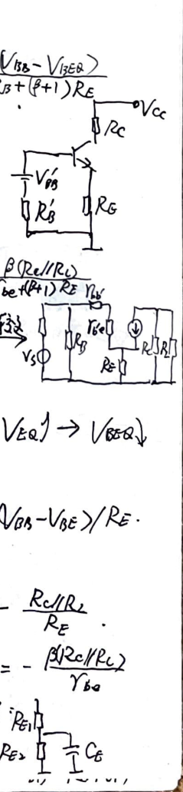
**II. Common Emitter Circuit**
Output voltage from emitter - emitter follower. $I_{o} = \frac{1}{1+2\beta} I_{R}$. $I_{R} = \frac{V_{cc} - V_{BE}}{R}$.
$I_{o} \rightarrow 1$, $I_{R} \approx V_{i}$ - emitter follower. $R_{o} = R_{ce2}$.
Delta consider base width modulation: $I_{o} = \frac{V_{t} + V_{ce2}}{V_{A} + V_{ce1}}$.
$I_{R} = 2I_{1} + 2I_{B1}$, ignore $I_{B3}$. $I_{o} \approx \frac{V_{A} + V_{ce2}}{V_{A} + V_{ce1}}$.
Advantages: simple, fewer components. Disadvantages: the circuit's $R_{o}$ is not large, so $I_{o}$ is not small; $I_{o}$ is greatly influenced by $V_{cc}$; $R_{o}$ is not large; $V_{ce}$ is very sensitive to temperature.
**III. Common Base Circuit**
Characteristics: voltage gain (same phase), with base equal value. Input resistance low, output resistance high.
**IV. Current Source Circuit**
Using BJT current source: $I_{o} = \frac{1}{1+2\beta R_{1}(\beta+1)} I_{R}$, $I_{R} = \frac{V_{cc} - 2V_{BE}}{R}$. $R_{o} = R_{ce2}$.
1. Basic Mirror Current Source
$I_{o} = \frac{1}{1+2\beta} I_{R}$, $I_{R} \approx \frac{V_{cc} - V_{BE}}{R + R_{E1}}$.
$I_{R} = R_{ce2}(1 + \frac{\beta R_{E2}}{R_{ce2} + R_{E2}})$, $R_{ce} \gg R_{E1}$. $I_{B1} = I_{B2}$. $I_{B1} = I_{B2}$. $I_{B1} = I_{B2}$. $I_{B1} = I_{B2}$. $I_{B1} = I_{B2}$. $I_{B1} = I_{B2}$. $I_{B1} = I_{B2}$. $I_{B1} = I_{B2}$. $I_{B1} = I_{B2}$. $I_{B1} = I_{B2}$. $I_{B1} = I_{B2}$. $I_{B1} = I_{B2}$. $I_{B1} = I_{B2}$. $I_{B1} = I_{B2}$. $I_{B1} = I_{B2}$. $I_{B1} = I_{B2}$. $I_{B1} = I_{B2}$. $I_{B1} = I_{B2}$. $I_{B1} = I_{B2}$. $I_{B1} = I_{B2}$. $I_{B1} = I_{B2}$. $I_{B1} = I_{B2}$. $I_{B1} = I_{B2}$. $I_{B1} = I_{B2}$. $I_{B1} = I_{B2}$. $I_{B1} = I_{B2}$. $I_{B1} = I_{B2}$. $I_{B1} = I_{B2}$. $I_{B1} = I_{B2}$. $I_{B1} = I_{B2}$. $I_{B1} = I_{B2}$. $I_{B1} = I_{B2}$. $I_{B1} = I_{B2}$. $I_{B1} = I_{B2}$. $I_{B1} = I_{B2}$. $I_{B1} = I_{B2}$. $I_{B1} = I_{B2}$. $I_{B1} = I_{B2}$. $I_{B1} = I_{B2}$. $I_{B1} = I_{B2}$. $I_{B1} = I_{B2}$. $I_{B1} = I_{B2}$. $I_{B1} = I_{B2}$. $I_{B1} = I_{B2}$. $I_{B1} = I_{B2}$. $I_{B1} = I_{B2}$. $I_{B1} = I_{B2}$. $I_{B1} = I_{B2}$. $I_{B1} = I_{B2}$. $I_{B1} = I_{B2}$. $I_{B1} = I_{B2}$. $I_{B1} = I_{B2}$. $I_{B1} = I_{B2}$. $I_{B1} = I_{B2}$. $I_{B1} = I_{B2}$. $I_{B1} = I_{B2}$. $I_{B1} = I_{B2}$. $I_{B1} = I_{B2}$. $I_{B1} = I_{B2}$. $I_{B1} = I_{B2}$. $I_{B1} = I_{B2}$. $I_{B1} = I_{B2}$. $I_{B1} = I_{B2}$. $I_{B1} = I_{B2}$. $I_{B1} = I_{B2}$. $I_{B1} = I_{B2}$. $I_{B1} = I_{B2}$. $I_{B1} = I_{B2}$. $I_{B1} = I_{B2}$. $I_{B1} = I_{B2}$. $I_{B1} = I_{B2}$. $I_{B1} = I_{B2}$. $I_{B1} = I_{B2}$. $I_{B1} = I_{B2}$. $I_{B1} = I_{B2}$. $I_{B1} = I_{B2}$. $I_{B1} = I_{B2}$. $I_{B1} = I_{B2}$. $I_{B1} = I_{B2}$. $I_{B1} = I_{B2}$. $I_{B1} = I_{B2}$. $I_{B1} = I_{B2}$. $I_{B1} = I_{B2}$. $I_{B1} = I_{B2}$. $I_{B1} = I_{B2}$. $I_{B1} =

2. Proportional Current Source 1) Load-Feedback Proportional Current Source $$Z_0 = (1 - \frac{2}{\beta + 2\beta + 2}) I_R, I_R = \frac{V_{CC} - 2V_{BE}}{R}$$ $$R_0 \approx \frac{1}{2} (\beta + 1) R_{C03}$$ $$R_{E1} \neq R_{E2}$$ $$Z_0 \approx \frac{V_{BE1} - V_{BE2} + I_R R_{E1}}{R_{E2}}$$ $$I_R R_{E1} \gg (V_{BE1} - V_{BE2})$$ $$Z_0 \approx \frac{R_{E1}}{R_{E2}} I_R, I_R = \frac{V_{CC} - V_{BE2} - V_{RE}}{R}$$ $$R_0 \approx R_{C03} (1 + \frac{\beta R_{E2}}{R_{B0} + R_B + R_{E2}})$$ 2) Simple Proportional Current Source $$\frac{Z_0}{I_R} \approx \frac{I_{E2}}{I_{E1}} \approx \frac{I_{E2} e^{V_{BE2}/V_T}}{I_{E1} e^{V_{BE1}/V_T}}$$ $$= \frac{I_{E2}}{I_{E1}} = \frac{S_2}{S_1}$$ $$T_1, T_2$$ characteristics not equal. 3. Micropower Current Source $$I_0 \approx \frac{V_T}{R_E} \ln \frac{I_R}{I_0}$$ $$I_R = \frac{V_{CC} - V_{BE1}}{R}$$ $$R_0$$ very high. 4. Well-Current Source $$V_{BE1} = V_{BE2}$$ $$2B_1 = I_{B1}$$ $$2C_1 = I_{C1}$$ $$R_1 = R_{BE}$$ $$R_0 = R_{C11} // R_{C2}$$ $$A_v = -\frac{R_1 (R_{C11} // R_{C2})}{R_{BE1}}$$ $$\Delta$$ Current Source Main Applications 1) DC Bias Circuit 2) Active Load Resistance $$CE:$$ DC resistance small, AC resistance large, best. $$A_v = \frac{\beta R_C}{R_E}$$ $$R_C$$ large, $$A_v$$ large (dynamic) $$V_{CC} = I_C R_C + V_{CE1}$$ $$R_C$$ small, $$V_{CC}$$ small (static) $$\Delta$$ DC Analysis: $$Z_0 = I_{C1}$$ $$T_1$$ load: $$I_{C2} = f(I_{B2}, V_{EC2})$$ $$R_0 = R_{C02}$$ $$V_{C2} + V_{C1} = V_{CC}$$ $$\Delta$$ Dynamic Analysis: $$A_v = -\frac{R_1 (R_{C11} // R_{C2})}{R_{BE1}}$$ $$\Delta$$ Voltage Gain High $$R_0$$ very high. $$\Delta$$ Current Source Main Applications 1) DC Bias Circuit 2) Active Load Resistance $$CE:$$ DC resistance small, AC resistance large, best. $$A_v = \frac{\beta R_C}{R_E}$$ $$R_C$$ large, $$A_v$$ large (dynamic) $$V_{CC} = I_C R_C + V_{CE1}$$ $$R_C$$ small, $$V_{CC}$$ small (static) $$\Delta$$ DC Analysis: $$Z_0 = I_{C1}$$ $$T_1$$ load: $$I_{C2} = f(I_{B2}, V_{EC2})$$ $$R_0 = R_{C02}$$ $$V_{C2} + V_{C1} = V_{CC}$$ $$\Delta$$ Dynamic Analysis: $$A_v = -\frac{R_1 (R_{C11} // R_{C2})}{R_{BE1}}$$ $$\Delta$$ Voltage Gain High $$R_0$$ very high.
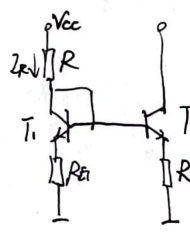
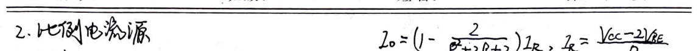
**Signal is a function of time**
**5. Differential Amplifier Circuit**
Let V1 and V2 be any amplitude and phase signal V1 = 1/2(V1 + V2) + 1/2(V1 - V2) V2 = 1/2(V1 + V2) - 1/2(V1 - V2) Common mode input signal: Vcm = (V1 + V2) / 2 Differential mode input signal: Vid = V1 - V2
**2. Dynamic Analysis: Large Signal State**
1) Differential mode: - Function: Non-saturated switch (operating in the linear region) - Limitation: Vcm = Vce + VBEBO
2) Common mode: - Function: Collector voltage almost unchanged - Limitation: Cannot drive BJT into saturation (Vcm).
**3. Dynamic Analysis: Small Signal State**
Aod: Differential mode voltage gain; Aud: Common mode voltage gain. Vo = Aud + Voc = AudVid + AudVic
1) Differential mode: - Double-ended output - Input path: Emitter grounded - Output path: R2 midpoint grounded Aud = Vo = Vo1 - Vo2 = 2Vo1 = -BR' / Rbe Rod = 2Rc, Rid = 2Re (with respect to ground)
2) Single-ended output - Base width modulation. Assume symmetric. Aud = -1/2 BR' / Rbe. If both are base grounded Rc, Aud = -BR' / Rbe. Rod = Rc, Rid = 2Re.
2) Common mode: 1) Double-ended output - Input path: Emitter 2Rc feedback resistor - Output path: R2 open circuit Roc = 2Re, Ric = 1/2 (2Re || Rc). Ic = (V1 + Vce) / 2ca
2) Single-ended output - Emitter follower 2Re, base bias width modulation Aud = -R' / Rbe. Ken = R' / Rbe. Aud = -R' / Rbe. Ken = R' / Rbe. Roc = 2Re, Ric = 1/2 (2Re || Rc). Ic = (V1 + Vce) / 2ca
**1. Static Analysis: DC Operating Point (no bias voltage Vb = 0)**
V1 = V2 = 0, VceQ1 = VceQ2 = 0.7V, VceQ1 = VceQ2 = Vcc - 1/2 Rc Iee. VceQ1 = VceQ2 = Vcc - 1/2 Rc Iee.
4. Active Load Differential Amplifier Analysis
1) Static Analysis: Symmetry, Current Source Analysis. 2) Dynamic Analysis (Small Signal, Linear Region):
$$V_{cc}$$ $$V_{ee}$$ $$V_{o}$$
Single-Ended Output
$$V_{in}$$
$$V_{be1}$$ $$V_{be2}$$ $$V_{ce1}$$ $$V_{ce2}$$ $$R_{be1}$$ $$R_{be2}$$ $$R_{ce1}$$ $$R_{ce2}$$ $$R_{L}$$
AC Path
1) Differential: Single-ended output, current source transmission function. Output terminal obtains the signal current is the single-ended signal current twice, equal to the dual-ended output current. $$A_{vd} = \frac{\beta R_{L}'}{R_{be}}$$ $$R_{L}' = R_{ce2} // R_{ce1} // R_{L}$$ $$R_{id} = 2 R_{be1}$$ $$R_{o} = R_{ce2} // R_{ce1}$$
2) Common: Common-mode signal → common-mode AC path → gain: R_{o} R_{id} Common-mode signal → common-mode AC path → gain: R_{o} R_{id} Analysis Method: Common-mode large signal → V_{cm} problem Current source output resistance
Analysis Method: Common-mode large signal → V_{cm} problem Current source output resistance

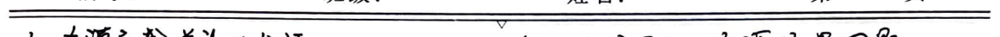
**Subject: Mathematics Assignment**
**Section: Power Amplifier Class**
**Subsection: Class B Power Amplifier**
**Class B Characteristics:** - Low distortion - High efficiency - Wide frequency range
**Requirements for Output Stage:** - Low output resistance (Ro) - High power output (Po) - Wide frequency range - Low distortion
**1. Basic Class B Power Amplifier**
**Static:** - Vi = 0, Vo = 0, Io = 0
**Dynamic:** - Positive half cycle: NPN transistor follower (Vc - Vce(sat)) - Negative half cycle: PNP transistor follower (Vc - Vce(sat))
**Static:** - P0 = Pdc = 0
**Dynamic:** - Pmax = 1/2 (Vcc - Vce(sat))^2 / R2 - Pdc(max) = 2Vcc (Vcc - Vce(sat)) / πR2 - ηmax ≈ π/4
**Limiting Parameters:** - Imax ≥ Vcc / R2 - V(BR)CEO ≥ 2Vcc - Pmax = 1/2 Pdc(max) = πVcc^2 / R2
**Advantages:** - Symmetrical positive and negative dynamic range (superior to common emitter)
**Disadvantages:** - When BJTs are used, crossover distortion
**2. Class AB Power Amplifier**
**Purpose 1:** - Reduce crossover distortion - Set both transistors to appropriate static operating points
**Purpose 2:** - Ensure both transistors have equal base bias voltage
**B. Class AB Characteristics:** - Conduction angle: Half of the signal's period - Class B: θ = 90° - Class A: θ = 180° - Class AB: θ ∈ (90°, 180°)
**C. Class AB Power Amplifier Output Power and Efficiency**
**Vom: Output Voltage Amplitude** **Iom: Output Current Amplitude**
**Load Average Power:** $$ P_0 = \frac{1}{2} \int_{0}^{2\pi} \left(\frac{V_{om} \sin(\omega t)}{R}\right)^2 d(\omega t) = \frac{1}{2} V_{om} I_{om} $$
**Power Supply Average Power:** $$ P_{dc} = 2 \cdot \frac{1}{2\pi} \int_{0}^{\pi} V_{cc} I_{om} \sin(\omega t) d(\omega t) = \frac{2V_{cc}}{\pi} \frac{V_{om}}{R} $$
**Efficiency:** $$ \eta = \frac{P_0}{P_{dc}} = \frac{\pi}{4} \frac{V_{om}}{V_{cc}} $$
**Transistor Total Power:** $$ P_{dc} - P_0 = \frac{2V_{cc}}{\pi} \frac{V_{om}}{R} - \frac{1}{2} \frac{V_{om}^2}{R} $$
If Vo can reach 1/2 Vcc, then the efficiency reaches its maximum value: $$ P_{max} = \frac{2}{\pi^2} \frac{V_{cc}^2}{R} $$
**D. Composite Transistor**
**Four Types of Connections:** - NNEB - PPEB - NPEB - PNEB
**Beta Ratio:** $$ \beta = \frac{\beta_1 + \beta_2}{1 + \beta_1 \beta_2} $$
**Input Resistance:** $$ R_{se} + R_1 + R_{be_2} + \ldots + R_{be_1} $$
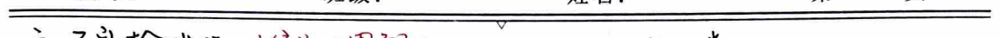
Solutions:
Solution 1: - Circuit diagram of a common-emitter amplifier with a base resistor and a collector resistor. - $$V_{o} = V_{cc} - [R_{c}(i_{C3} + i_{B3}) + V_{BE1}]$$ - $$V_{o} = V_{cc} - R_{c}i_{C3}$$ - $$V_{o} = \frac{V_{cc} - V_{BE1}}{1 + (1 + \beta_{1})R_{c}}$$ - $$V_{o} = \frac{V_{cc} - V_{BE1}}{1 + (1 + \beta_{1})R_{c}}$$
Solution 2: VBE Emitter Follower Circuit - Circuit diagram of a common-emitter amplifier with a base resistor and a collector resistor. - $$V_{CEQ4} = V_{BEQ1} + V_{BEQ2} \approx (1 + \frac{R_{1}}{R_{2}})V_{CEQ4}$$ - $$V_{CEQ4} \approx \frac{V_{cc}}{1 + \frac{R_{1}}{R_{2}}}$$ - $$V_{CEQ4} \approx \frac{V_{cc}}{1 + \frac{R_{1}}{R_{2}}}$$
Solution 1: Direct Coupled Common Emitter (CC) - Circuit diagram of a common-emitter amplifier with a base resistor and a collector resistor. - $$V_{o} = [R_{c}(i_{C3} + i_{B3}) + V_{BE1}] + V_{cc}$$ - $$V_{o} = R_{c}i_{C3} + V_{cc}$$ - $$V_{o} = R_{c}i_{C3} + V_{cc}$$
Solution 2: Common Emitter with Capacitor Coupling - Circuit diagram of a common-emitter amplifier with a base resistor and a collector resistor. - $$V_{o} = R_{c}i_{C3} + V_{cc}$$ - $$V_{o} = R_{c}i_{C3} + V_{cc}$$
Solution 1: Common Emitter with Capacitor Coupling - Circuit diagram of a common-emitter amplifier with a base resistor and a collector resistor. - $$V_{o} = R_{c}i_{C3} + V_{cc}$$ - $$V_{o} = R_{c}i_{C3} + V_{cc}$$
Solution 2: Common Emitter with Capacitor Coupling - Circuit diagram of a common-emitter amplifier with a base resistor and a collector resistor. - $$V_{o} = R_{c}i_{C3} + V_{cc}$$ - $$V_{o} = R_{c}i_{C3} + V_{cc}$$
Solution 1: Common Emitter with Capacitor Coupling - Circuit diagram of a common-emitter amplifier with a base resistor and a collector resistor. - $$V_{o} = R_{c}i_{C3} + V_{cc}$$ - $$V_{o} = R_{c}i_{C3} + V_{cc}$$
Solution 2: Common Emitter with Capacitor Coupling - Circuit diagram of a common-emitter amplifier with a base resistor and a collector resistor. - $$V_{o} = R_{c}i_{C3} + V_{cc}$$ - $$V_{o} = R_{c}i_{C3} + V_{cc}$$
Solution 1: Common Emitter with Capacitor Coupling - Circuit diagram of a common-emitter amplifier with a base resistor and a collector resistor. - $$V_{o} = R_{c}i_{C3} + V_{cc}$$ - $$V_{o} = R_{c}i_{C3} + V_{cc}$$
Solution 2: Common Emitter with Capacitor Coupling - Circuit diagram of a common-emitter amplifier with a base resistor and a collector resistor. - $$V_{o} = R_{c}i_{C3} + V_{cc}$$ - $$V_{o} = R_{c}i_{C3} + V_{cc}$$
Solution 1: Common Emitter with Capacitor Coupling - Circuit diagram of a common-emitter amplifier with a base resistor and a collector resistor. - $$V_{o} = R_{c}i_{C3} + V_{cc}$$ - $$V_{o} = R_{c}i_{C3} + V_{cc}$$
Solution 2: Common Emitter with Capacitor Coupling - Circuit diagram of a common-emitter amplifier with a base resistor and a collector resistor. - $$V_{o} = R_{c}i_{C3} + V_{cc}$$ - $$V_{o} = R_{c}i_{C3} + V_{cc}$$
Solution 1: Common Emitter with Capacitor Coupling - Circuit diagram of a common-emitter amplifier with a base resistor and a collector resistor. - $$V_{o} = R_{c}i_{C3} + V_{cc}$$ - $$V_{o} = R_{c}i_{C3} + V_{cc}$$
Solution 2: Common Emitter with Capacitor Coupling - Circuit diagram of a common-emitter amplifier with a base resistor and a collector resistor. - $$V_{o} = R_{c}i_{C3} + V_{cc}$$ - $$V_{o} = R_{c}i_{C3} + V_{cc}$$
Solution 1: Common Emitter with Capacitor Coupling - Circuit diagram of a common-emitter amplifier with a base resistor and a collector resistor. - $$V_{o} = R_{c}i_{C3} + V_{cc}$$ - $$V_{o} = R_{c}i_{C3} + V_{cc}$$
Solution 2: Common Emitter with Capacitor Coupling - Circuit diagram of a common-emitter amplifier with a base resistor and a collector resistor. - $$V_{o} = R_{c}i_{C3} + V_{cc}$$ - $$V_{o} = R_{c}i_{C3} + V_{cc}$$
Solution 1: Common Emitter with Capacitor Coupling - Circuit diagram of a common-emitter amplifier with a base resistor and a collector resistor. - $$V_{o} = R_{c}i_{C3} + V_{cc}$$ - $$V_{o} = R_{c}i_{C3} + V_{cc}$$
Solution 2: Common
**Mathematical Content:**
1. Frequency response analysis method. 2. Small signal amplifier circuit: - Medium frequency - Low frequency - High frequency - Linear time-invariant system. 3. Zero state: Vc(t) = R ic(t), Vc(t) = 2 di/dt, Vc = 1/0 ∫t u(t) dt 4. Laplace transform: Vc(s) = R ic(s), Vc(s) = 2 L i(s), Vc(s) = 1/s C c(s) 5. Component model: R, sL, 1/sC. All real parts are positive. 6. v(t) = h(t) * e(t), then R(s) = H(s) * E(s), thus H(s) = R(s) / E(s) 7. For the small signal component model, H(s) in the amplifier circuit is a general rational function. Further, H(s) = K * ∏(s - z) / ∏(s - p) 8. Impulse response e(t) = E sin(ωt) 9. E(s) = E sin(ωt) 10. R(s) = E sin(ωt) H(s) 11. H(s) = K * ∏(s - z) / ∏(s - p) 12. H(s) = K * ∏(s - z) / ∏(s - p) 13. H(s) = K * ∏(s - z) / ∏(s - p) 14. H(s) = K * ∏(s - z) / ∏(s - p) 15. H(s) = K * ∏(s - z) / ∏(s - p) 16. H(s) = K * ∏(s - z) / ∏(s - p) 17. H(s) = K * ∏(s - z) / ∏(s - p) 18. H(s) = K * ∏(s - z) / ∏(s - p) 19. H(s) = K * ∏(s - z) / ∏(s - p) 20. H(s) = K * ∏(s - z) / ∏(s - p) 21. H(s) = K * ∏(s - z) / ∏(s - p) 22. H(s) = K * ∏(s - z) / ∏(s - p) 23. H(s) = K * ∏(s - z) / ∏(s - p) 24. H(s) = K * ∏(s - z) / ∏(s - p) 25. H(s) = K * ∏(s - z) / ∏(s - p) 26. H(s) = K * ∏(s - z) / ∏(s - p) 27. H(s) = K * ∏(s - z) / ∏(s - p) 28. H(s) = K * ∏(s - z) / ∏(s - p) 29. H(s) = K * ∏(s - z) / ∏(s - p) 30. H(s) = K * ∏(s - z) / ∏(s - p) 31. H(s) = K * ∏(s - z) / ∏(s - p) 32. H(s) = K * ∏(s - z) / ∏(s - p) 33. H(s) = K * ∏(s - z) / ∏(s - p) 34. H(s) = K * ∏(s - z) / ∏(s - p) 35. H(s) = K * ∏(s - z) / ∏(s - p) 36. H(s) = K * ∏(s - z) / ∏(s - p) 37. H(s) = K * ∏(s - z) / ∏(s - p) 38. H(s) = K * ∏(s - z) / ∏(s - p) 39. H(s) = K * ∏(s - z) / ∏(s - p) 40. H(s) = K * ∏(s - z) / ∏(s - p) 41. H(s) = K * ∏(s - z) / ∏(s - p) 42. H(s) = K * ∏(s - z) / ∏(s - p) 43. H(s) = K * ∏(s - z) / ∏(s - p) 44. H(s) = K * ∏(s - z) / ∏(s - p) 45. H(s) = K * ∏(s - z) / ∏(s - p) 46. H(s) = K * ∏(s - z) / ∏(s - p) 47. H(s) = K * ∏(s - z) / ∏(s - p) 48. H(s) = K * ∏(s - z) / ∏(s - p) 49. H(s) = K * ∏(s - z) / ∏(s - p) 50. H(s) = K * ∏(s - z) / ∏(s - p) 51. H(s) = K * ∏(s - z) / ∏(s - p) 52. H(s) = K * ∏(s - z) / ∏(s - p) 53. H(s) = K * ∏(s - z) / ∏(s - p) 54. H(s) = K * ∏(s - z) / ∏(s - p) 55. H(s) = K * ∏(s - z) / ∏(s - p) 56. H(s) = K * ∏(s - z) / ∏(s - p) 57. H(s) = K * ∏(s - z) / ∏(s - p) 58. H(s) = K * ∏(s - z) / ∏(s - p) 59. H(s) = K * ∏(s - z) / ∏(s - p) 60. H(s) = K * ∏(s - z) / ∏(s - p) 61. H(s) = K * ∏(s - z) / ∏(s - p) 62. H(s) = K
3. Linearity distortion: - Amplitude distortion: no new frequency components - Phase distortion: produces new frequency components (maybe) - Distortion transfer: H(t) = Ke^(t-t0) => H(jw) = Ke^(jw0) - Bandwidth: midband gain Avsm - bandwidth BW.
4. Due to single-ended, common-emitter, and common-base configurations being approximately equivalent to RC circuits, thus analyzing RC low-pass/high-pass filters:
$$H(jw) = \frac{1}{1+j\frac{f}{f_H}}$$ $$f_H = \frac{1}{2\pi RC}$$ $$\therefore 20\lg|H| = -20\lg\sqrt{1+(f/f_H)^2}$$ $$\varphi = -\arctan\left(\frac{f}{f_H}\right)$$
- At f = f_H, phase shift 20lg√2 ≈ 3dB - At f = 0.1f_H, phase shift arctan 0.1 ≈ 5.7° - At f = 10f_H, phase shift arctan 10 ≈ -5.7°
$$H(jw) = \frac{j\frac{f}{f_2}}{1+j\frac{f}{f_2}}$$ $$f_2 = \frac{1}{2\pi RC}$$ $$\therefore 20\lg|H| = 20\lg\left(\frac{f}{f_2}\right) - 20\lg\sqrt{1+(f/f_2)^2}$$ $$\varphi = -\arctan\left(\frac{f}{f_2}\right) + \frac{\pi}{2}$$
- At f = f_2, phase shift 20lg√2 ≈ 3dB - At f = 0.1f_2, phase shift arctan 0.1 ≈ 5.7° - At f = 10f_2, phase shift arctan 10 ≈ -5.7°
5. Common-emitter high-frequency response (second-order to first-order zero): Simplified steps: ignore Cm' -> combine RSC $$A_{vs} = A_{vs} \frac{1}{1+j\frac{f}{f_H}}$$ $$f_H = \frac{1}{2\pi R_S C}$$: R_S is the input resistance seen from C. G·BW = |A_{vs}|·f_H, R_S, Cb', C'e', G·BW↑, f_H↑ Note: To increase f_H, R_S should be minimized -> constant voltage excitation.
Common-emitter high-frequency response (second-order zero to first-order zero): Simplified steps: ignore Cb'c (ωCb'c >> R_S + Rbb') $$A_{vs} = A_{vs} \frac{1+j\frac{f}{f_2}}{1+j\frac{f}{f_p}}$$ $$f_2 \approx f_1, f_p = \frac{1}{2\pi R_S C}$$: R_S is the input resistance seen from C. $$f_p = \frac{1}{2\pi R_S C}$$: R_S is the input resistance seen from C. $$f_H = \left(\frac{1}{f_p} - \frac{1}{f_2}\right)^{-1}$$: R_S↑, Cb'c↑, f_H↑ Note: To increase f_H, R_S should be minimized -> constant voltage excitation. Cb'c's compensation current effect is large at f_H.
Common-emitter high-frequency response (second-order zero): Simplified steps: ignore Rbb' -> separate current source -> equivalent source equals 1/gm $$A_{vs} = A_{vs} \frac{1}{1+j\frac{f}{f_p} \times 1+j\frac{f}{f_p}}$$ $$f_{p1} = \frac{1}{2\pi (R_S//R_e) C}$$: R_S//R_e is the equivalent resistance seen from C. $$f_{p2} = \frac{1}{2\pi R_S C}$$: R_S is the equivalent resistance seen from C. $$\frac{1}{f_{p1}} \propto \sqrt{\frac{1}{f_{p1}} + \frac{1}{f_{p2}}}$$
Note: To increase f_p1, R_S should be maximized -> constant current excitation. Avoid f_p2 being too small, not suitable for capacitive load.
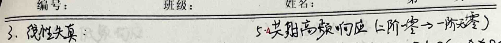
6. Low Frequency Response
BJT internal capacitance small: Cbe 10pF, Cbc 1pF. Low frequency can be ignored. Generally, small capacitors are bypassed in series and parallel. Simplify the circuit: ignore bias resistor RB; ignore RE. The base circuit combines C and the feedback loop. The base circuit is equivalent to a voltage source.
$$A_{vs} = A_{vsm} \frac{jf/f_{1}}{1+jf/f_{2}} \cdot \frac{jf/f_{1}}{1+jf/f_{2}}$$
$$f_{1} = \frac{1}{2\pi (R_{s} + R_{be})C} \cdot C \sim R_{s} + R_{be} (C \text{ very large})$$
$$f_{2} = \frac{1}{2\pi (R_{c} + R_{L})C} \cdot C \sim R_{c} + R_{L}$$
$$f_{2} \approx \sqrt{f_{1}^{2} + f_{2}^{2}} \cdot \text{For C1, C2, C3, f1 = 0 (direct coupling)}$$
General method: Use superposition principle (resistive network), determine the time constant. When the time constant is known, the other capacitors can be calculated one by one.
7. Multi-Stage Amplifier Frequency Response
Main factors affecting low frequency response: coupling capacitors, lead capacitance. Main factors affecting high frequency response: lead capacitance, distributed capacitance. Time constant method to analyze each capacitor's single effect on the circuit.
8. Multi-Stage Amplifier
Capacitor coupling: Not suitable for integration, low frequency response is poor. Transformer coupling: Large volume, low frequency response is poor. Direct coupling: Easy to integrate. f1 = 0; DC current matching problem, zero drift.
1. DC resistance matching problem. (1) Base-emitter diode/constant current diode (static voltage drop small) (2) Current source DC voltage shifting circuit (shifts 20R) high frequency point (3) NPN-PNP互补 DC voltage shifting circuit.
2. Zero drift problem. Zero point, working point. Drift: Output voltage relative to the initial value randomly fluctuates. Solution: Input offset compensation
3. Multi-stage amplifier circuit calculation method. Look down to include input resistance, look up to include output resistance. 1) CE-CB $$A_{v1} = -\frac{R_{c}'}{R_{be}} \approx -1 \quad (R_{c}' = R_{be} / (1 + 1))$$ $$A_{v2} = -\frac{R_{c}'}{R_{be}} \quad R_{c} = R_{be}$$ $$A_{v} = \frac{R_{c}'}{R_{be}}$$ $$R_{c} = R_{be}$$ $$A_{v} = \frac{R_{c}'}{R_{be}}$$ $$R_{c} = R_{be}$$ $$A_{v} = \frac{R_{c}'}{R_{be}}$$ $$R_{c} = R_{be}$$ $$A_{v} = \frac{R_{c}'}{R_{be}}$$ $$R_{c} = R_{be}$$ $$A_{v} = \frac{R_{c}'}{R_{be}}$$ $$R_{c} = R_{be}$$ $$A_{v} = \frac{R_{c}'}{R_{be}}$$ $$R_{c} = R_{be}$$ $$A_{v} = \frac{R_{c}'}{R_{be}}$$ $$R_{c} = R_{be}$$ $$A_{v} = \frac{R_{c}'}{R_{be}}$$ $$R_{c} = R_{be}$$ $$A_{v} = \frac{R_{c}'}{R_{be}}$$ $$R_{c} = R_{be}$$ $$A_{v} = \frac{R_{c}'}{R_{be}}$$ $$R_{c} = R_{be}$$ $$A_{v} = \frac{R_{c}'}{R_{be}}$$ $$R_{c} = R_{be}$$ $$A_{v} = \frac{R_{c}'}{R_{be}}$$ $$R_{c} = R_{be}$$ $$A_{v} = \frac{R_{c}'}{R_{be}}$$ $$R_{c} = R_{be}$$ $$A_{v} = \frac{R_{c}'}{R_{be}}$$ $$R_{c} = R_{be}$$ $$A_{v} = \frac{R_{c}'}{R_{be}}$$ $$R_{c} = R_{be}$$ $$A_{v} = \frac{R_{c}'}{R_{be}}$$ $$R_{c} = R_{be}$$ $$A_{v} = \frac{R_{c}'}{R_{be}}$$ $$R_{c} = R_{be}$$ $$A_{v} = \frac{R_{c}'}{R_{be}}$$ $$R_{c} = R_{be}$$ $$A_{v} = \frac{R_{c}'}{R_{be}}$$ $$R_{c} = R_{be}$$ $$A_{v} = \frac{R_{c}'}{R_{be}}$$ $$R_{c} = R_{be}$$ $$A_{v} = \frac{R_{c}'}{R_{be}}$$ $$R_{c} = R_{be}$$ $$A_{v} = \frac{R_{c}'}{R_{be}}$$ $$R_{c} = R_{be}$$ $$A_{v} = \frac{R_{c}'}{R_{be}}$$ $$R_{c} = R_{be}$$ $$A_{v} = \frac{R_{c}'}{R_{be}}$$ $$R_{c} = R_{be}$$ $$A_{v} = \frac{R_{c}'}{R_{be}}$$ $$R_{c} = R_{be}$$ $$A_{v} = \frac{R_{c}'}{R_{be}}$$ $$R_{c} = R_{be}$$ $$A_{v} = \frac{R_{c}'}{R_{be}}$$ $$R_{
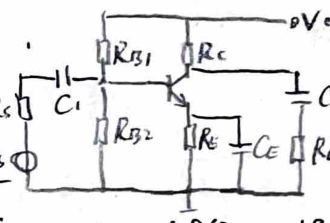

2) CC-CB
4) CE-CB differential
$$A_{V1} = \frac{(\beta+1)R_{C1}}{R_{be1} + (\beta+1)R_{C1}} \approx \frac{1}{2} (R_{C1} = \frac{R_{be}}{\beta+1})$$
$$A_{V2} = \frac{\beta R_{C1}}{R_{be1}}$$
$$A_{V} = \frac{\beta R_{C1}}{2 R_{be1}}$$
With single-ended input single-ended output
The differential amplifier:
$$R_{i} = R_{be1} + (\beta+1)R_{C1}$$
$$R_{o} \approx R_{C1}$$
CC, CB have good high-frequency response.
3) CC-CE
$$A_{V1} = \frac{(\beta+1)R_{be2}}{R_{be1} + (\beta+1)R_{be2}}$$
$$A_{V2} = -\frac{\beta R_{C1}}{R_{be2}}$$
$$A_{V} = -\frac{\beta (\beta+1)R_{C1}}{R_{be1} + (\beta+1)R_{be2}}$$
$$R_{o} = R_{C1}$$
The differential amplifier:
$$T1 \rightarrow T1 Ic1 \rightarrow T2 Ic1 \rightarrow T3 Ic1 \rightarrow T4 Ic1 \rightarrow T1 T2 Ic1$$
$$\rightarrow T1 T2 Ic1$$
The differential amplifier:
$$T1 \rightarrow T1 Ic1 \rightarrow T2 Ic1 \rightarrow T3 Ic1 \rightarrow T4 Ic1 \rightarrow T1 T2 Ic1$$
$$\rightarrow T1 T2 Ic1$$
The differential amplifier:
$$T1 \rightarrow T1 Ic1 \rightarrow T2 Ic1 \rightarrow T3 Ic1 \rightarrow T4 Ic1 \rightarrow T1 T2 Ic1$$
$$\rightarrow T1 T2 Ic1$$
The differential amplifier:
$$T1 \rightarrow T1 Ic1 \rightarrow T2 Ic1 \rightarrow T3 Ic1 \rightarrow T4 Ic1 \rightarrow T1 T2 Ic1$$
$$\rightarrow T1 T2 Ic1$$
The differential amplifier:
$$T1 \rightarrow T1 Ic1 \rightarrow T2 Ic1 \rightarrow T3 Ic1 \rightarrow T4 Ic1 \rightarrow T1 T2 Ic1$$
$$\rightarrow T1 T2 Ic1$$
The differential amplifier:
$$T1 \rightarrow T1 Ic1 \rightarrow T2 Ic1 \rightarrow T3 Ic1 \rightarrow T4 Ic1 \rightarrow T1 T2 Ic1$$
$$\rightarrow T1 T2 Ic1$$
The differential amplifier:
$$T1 \rightarrow T1 Ic1 \rightarrow T2 Ic1 \rightarrow T3 Ic1 \rightarrow T4 Ic1 \rightarrow T1 T2 Ic1$$
$$\rightarrow T1 T2 Ic1$$
The differential amplifier:
$$T1 \rightarrow T1 Ic1 \rightarrow T2 Ic1 \rightarrow T3 Ic1 \rightarrow T4 Ic1 \rightarrow T1 T2 Ic1$$
$$\rightarrow T1 T2 Ic1$$
The differential amplifier:
$$T1 \rightarrow T1 Ic1 \rightarrow T2 Ic1 \rightarrow T3 Ic1 \rightarrow T4 Ic1 \rightarrow T1 T2 Ic1$$
$$\rightarrow T1 T2 Ic1$$
The differential amplifier:
$$T1 \rightarrow T1 Ic1 \rightarrow T2 Ic1 \rightarrow T3 Ic1 \rightarrow T4 Ic1 \rightarrow T1 T2 Ic1$$
$$\rightarrow T1 T2 Ic1$$
The differential amplifier:
$$T1 \rightarrow T1 Ic1 \rightarrow T2 Ic1 \rightarrow T3 Ic1 \rightarrow T4 Ic1 \rightarrow T1 T2 Ic1$$
$$\rightarrow T1 T2 Ic1$$
The differential amplifier:
$$T1 \rightarrow T1 Ic1 \rightarrow T2 Ic1 \rightarrow T3 Ic1 \rightarrow T4 Ic1 \rightarrow T1 T2 Ic1$$
$$\rightarrow T1 T2 Ic1$$
The differential amplifier:
$$T1 \rightarrow T1 Ic1 \rightarrow T2 Ic1 \rightarrow T3 Ic1 \rightarrow T4 Ic1 \rightarrow T1 T2 Ic1$$
$$\rightarrow T1 T2 Ic1$$
The differential amplifier:
$$T1 \rightarrow T1 Ic1 \rightarrow T2 Ic1 \rightarrow T3 Ic1 \rightarrow T4 Ic1 \rightarrow T1 T2 Ic1$$
$$\rightarrow T1 T2 Ic1$$
The differential amplifier:
$$T1 \rightarrow T1 Ic1 \rightarrow T2 Ic1 \rightarrow T3 Ic1 \rightarrow T4 Ic1 \rightarrow T1 T2 Ic1$$
$$\rightarrow T1 T2 Ic1$$
The differential amplifier:
$$T1 \rightarrow T1 Ic1 \rightarrow T2 Ic1 \rightarrow T3 Ic1 \rightarrow T4 Ic1 \rightarrow T1 T2 Ic1$$
$$\rightarrow T1 T2 Ic1$$
The differential amplifier:
$$T1 \rightarrow T1 Ic1 \rightarrow T2 Ic1 \rightarrow T3 Ic1 \rightarrow T4 Ic1 \rightarrow T1 T2 Ic1$$
$$\rightarrow T1 T2 Ic1$$
The differential amplifier:
$$T1 \rightarrow T1 Ic1 \rightarrow T2 Ic1 \rightarrow T3 Ic1 \rightarrow T4 Ic1 \rightarrow T1 T2 Ic1$$
$$\rightarrow T1 T2 Ic1$$
The differential amplifier:
$$T1 \rightarrow T1 Ic1 \rightarrow T2 Ic1 \rightarrow T3 Ic1 \rightarrow T4 Ic1 \rightarrow T1 T2 Ic1$$
$$\rightarrow T1 T2 Ic1$$
The differential amplifier:
$$T1 \rightarrow T1 Ic1 \rightarrow T2 Ic1 \rightarrow T3 Ic1 \rightarrow T4 Ic1 \rightarrow T1 T2 Ic1$$
$$\rightarrow T1 T2 Ic1$$
The differential amplifier:
$$T1 \rightarrow T1 Ic1 \rightarrow T2 Ic1 \rightarrow T3 Ic1 \rightarrow
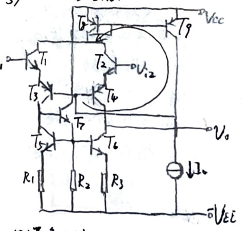
**Subject:** Mathematics Homework
**Topic:** MOSFET Model
**Section 1: Statics**
1. **Variable Resistance Region:** $$ I_D = \frac{W}{2} \left[ 2(V_{GS} - V_{TH}) V_{DS} - V_{DS}^2 \right] $$
2. **Saturation Region:** $$ I_D = \frac{W}{2} \left( V_{GS} - V_{TH} \right)^2 \left( 1 + \lambda V_{DS} \right) $$
3. **Low-Frequency Small Signal**
$$ g_m = \frac{\partial i_D}{\partial V_{GS}} = 2 \sqrt{\frac{K_n W}{2} I_D} $$
$$ g_{mb} = \eta g_m $$
$$ g_{ds} = \frac{1}{r_{ds}} = \frac{I_D}{V_A + V_{DSQ}} = \frac{\lambda I_D}{1 + \lambda V_{DSQ}} $$
4. **High-Frequency Small Signal**
$$ g_{gb} = g_{gs} + g_{gd} $$
$$ g_{gd} = g_{bd} $$
$$ C_{gs} = C_{gb} + C_{gs} $$
$$ C_{gd} = C_{bd} $$
$$ \text{Output AC Circuit (Source Short) to make } \frac{i_d}{i_g} = 1 \text{ frequency } f_T = \frac{g_m}{2 \pi (C_{gs} + C_{gd})} $$
**Section 2: MOSFET with Resistor and Current Source**
1. **Resistor (Frequency)** - **Enhancement Type: GD Short Circuit** - **DC:** $$ R_D = \frac{V_{DSQ}}{2 \alpha Q} $$ - **AC:** $$ r = r_{ds} \parallel \frac{1}{g_m} \text{ (b-s short)} $$
- **Depletion Type: GS Short Circuit** - **DC:** $$ R_D = \frac{V_{DSQ}}{2 \alpha Q} $$ - **AC:** $$ r = r_{ds} \text{ (b-s short)} $$
2. **Current Source (Frequency)** - **Basic Current Source / Proportional Current Source** - **Resistor Gain Current Source** - **DC:** $$ I_R = \frac{V_{S1} L_1}{V_{S2} L_2} I_R $$ - **AC:** $$ I_R = \frac{V_{S1} L_1}{V_{S2} L_2} I_R $$ - **Output Impedance** $$ R_0 = r_{ds} $$
- **Current Source / Proportional Current Source** - **Transistor Feedback, Temperature Stability Good** - **DC:** $$ R_0 = (g_m r_{ds}) r_{ds} $$ - **AC:** $$ V_{S4} = V_{S3} \text{, improve accuracy} $$
- **Deficiency:** - **Basic Current Source Dynamic Range Small (due to high VDS)**
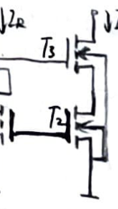
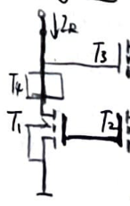
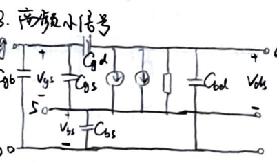

3. Source follower circuit
1. NMOS E/D $$V_{2} = V_{ds1} > V_{th}$$ $$V_{0} = V_{ds1} > V_{ds1} - V_{th}$$ $$V_{DD} - V_{0} = V_{ds2} > -V_{off}$$
2. CMOS CS $$V_{2} = V_{ds1} > V_{th}$$ $$V_{0} = V_{ds1} > V_{ds1} - V_{th}$$ $$V_{DD} - V_{0} = V_{ds2} > -V_{off}$$
4. Source follower circuit
1. NMOS E/D $$A_{V} = -g_{m1} \cdot (g_{ds1} + g_{ds2} + g_{mb2})^{-1} = -g_{m1} R_{o}$$
2. CMOS CS $$V_{2} = V_{ds1} > V_{th}$$ $$V_{0} = V_{ds1} > V_{ds1} - V_{th}$$ $$V_{ds1} - V_{DD} = V_{ds2} < V_{ds1} - V_{ds2}$$
5. Common-source circuit
1. NMOS E/D 1) Low frequency: $V_{ds1} = V_{ds1} = -V_{i}$, specific analysis. 2) High frequency: With BJT CB mode, input and output nodes.
2. CMOS CS 1) Low frequency: With BJTs, specific analysis. 2) High frequency: With NMOS E/D mode, specific analysis in output nodes.
6. Source follower - common-source circuit
1. NMOS E/D $$V_{2} = V_{ds1} > V_{th}$$ $$V_{0} = V_{ds1} > V_{ds1} - V_{th}$$ $$V_{DD} - V_{0} = V_{ds2} > -V_{off}$$
2. CMOS CS 1) Low frequency: $i_{ds1} = g_{m1} V_{i}$, $V_{0} = -R_{o} i_{ds2}$ $$\approx -g_{m1} R_{o} V_{i} \approx -g_{m1} R_{ds1} \parallel g_{m2} V_{i}$$ $$\therefore A_{V} \approx -\frac{g_{m1}}{g_{ds1} + g_{ds2}}$$
2) High frequency: Output node as the main node, not analyzed.
7. MOS differential
1. Low frequency: $A_{V} \approx -g_{m1} / g_{m2}$ 2. High frequency: Similar to NMOS.
$$V_{DD} = \frac{k_{p}}{2} \left( V_{ds1} - V_{ds2} \right)^{2}$$ $$V_{DD} = V_{ds1} - V_{ds2}$$
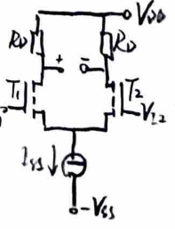
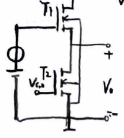


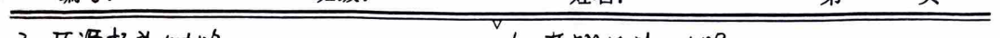
(Subject: )
Math Assignment Paper
ID1 = 2ss + KpW/2 * VD + 2ss * (KpW/2)^2 - VD^2
VD1 = 2ss + KpW/2 * VD * sqrt(2ss * (KpW/2)^2 - (VD)^2)
VD2 = 2ss - KpW/2 * VD * sqrt(2ss * (KpW/2)^2 - (VD)^2)
1. VD << sqrt(4L2ss/KpW) when small signal iin = -iout = sqrt(KpW/4L) * VD
2. VD = ±sqrt(2L2ss/KpW) when saturation
1) Common MOSFET Differential output: AD = -gm * (Rd1//Rd2) Avc = 0, Kavr = ∞ Single-ended output: AD = -1/2 * gm * (Rd1//Rd2) Avc = -gm * Rd1 / (1 + 2gm * Rs)
2) Load with CD Low frequency: Half-wave analysis, common mode considered High frequency: CS
3) Load with CD and E Low frequency: Half-wave analysis, common mode considered High frequency: CS
4) CMOS (PMOS load) Low frequency: Half-wave analysis, common mode considered High frequency: CS
5) CMOS (PMOS load with CD) Low frequency: Half-wave analysis, common mode considered High frequency: CS
iout ≈ -id2 = gm * (Vii - Vii) / 2 to = id4 - id2 ≈ 2 * iout = gm * (Vii - Vii) Vo = iout * (rds1//rds2) ≈ gm * (rds1//rds2) * (Vii - Vii) Aout = gm * (rds1//rds2)
11. CMOS output stage 1. CMOS CD T1, T2:互补CD甲类 T3, T4:偏置元件 T5:驱动级CS甲类 T6:有源负载
动态范围(双向): Vo = VDD - |Vds1| - Vds1 Vds1 ≥ Vds1 - Vds1 => maximum range when Vds1 = Vds1 - Vds1. |Vds1| > |Vds1|
2. CMOS CS T1, T2:互补CS甲类 T3, T4:CD移动电平 Vds1 = Vds - VDD Vds2 = Vds - Vds1 + Vds 动态范围大，输出电阻大
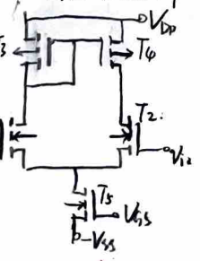
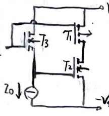
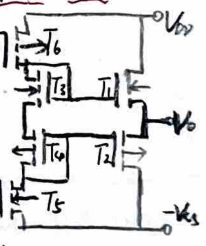
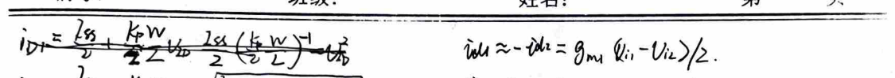
BJT MOS
- BJT MOS - NPN - PNP - $$i_{c} = I_{s}(e^{V_{be}} - 1)(1 + \lambda V_{be})$$
- BJT - $$V_{be}$$ - $$V_{ce}$$
- MOS - ENMOS - EPMOS - $$i_{d} = \frac{1}{2} \lambda (V_{gs} - V_{th})(1 + \lambda V_{gs})$$
- DMOS - $$V_{ds}$$ - $$V_{gs}$$
- CMOS - $$V_{ds}$$ - $$V_{gs}$$
- CMOS - $$V_{ds}$$ - $$V_{gs}$$
- CMOS - $$V_{ds}$$ - $$V_{gs}$$
- CMOS - $$V_{ds}$$ - $$V_{gs}$$
- CMOS - $$V_{ds}$$ - $$V_{gs}$$
- CMOS - $$V_{ds}$$ - $$V_{gs}$$
- CMOS - $$V_{ds}$$ - $$V_{gs}$$
- CMOS - $$V_{ds}$$ - $$V_{gs}$$
- CMOS - $$V_{ds}$$ - $$V_{gs}$$
- CMOS - $$V_{ds}$$ - $$V_{gs}$$
- CMOS - $$V_{ds}$$ - $$V_{gs}$$
- CMOS - $$V_{ds}$$ - $$V_{gs}$$
- CMOS - $$V_{ds}$$ - $$V_{gs}$$
- CMOS - $$V_{ds}$$ - $$V_{gs}$$
- CMOS - $$V_{ds}$$ - $$V_{gs}$$
- CMOS - $$V_{ds}$$ - $$V_{gs}$$
- CMOS - $$V_{ds}$$ - $$V_{gs}$$
- CMOS - $$V_{ds}$$ - $$V_{gs}$$
- CMOS - $$V_{ds}$$ - $$V_{gs}$$
- CMOS - $$V_{ds}$$ - $$V_{gs}$$
- CMOS - $$V_{ds}$$ - $$V_{gs}$$
- CMOS - $$V_{ds}$$ - $$V_{gs}$$
- CMOS - $$V_{ds}$$ - $$V_{gs}$$
- CMOS - $$V_{ds}$$ - $$V_{gs}$$
- CMOS - $$V_{ds}$$ - $$V_{gs}$$
- CMOS - $$V_{ds}$$ - $$V_{gs}$$
- CMOS - $$V_{ds}$$ - $$V_{gs}$$
- CMOS - $$V_{ds}$$ - $$V_{gs}$$
- CMOS - $$V_{ds}$$ - $$V_{gs}$$
- CMOS - $$V_{ds}$$ - $$V_{gs}$$
- CMOS - $$V_{ds}$$ - $$V_{gs}$$
- CMOS - $$V_{ds}$$ - $$V_{gs}$$
- CMOS - $$V_{ds}$$ - $$V_{gs}$$
- CMOS - $$V_{ds}$$ - $$V_{gs}$$
- CMOS - $$V_{ds}$$ - $$V_{gs}$$
- CMOS - $$V_{ds}$$ - $$V_{gs}$$
- CMOS - $$V_{ds}$$ - $$V_{gs}$$
- CMOS - $$V_{ds}$$ - $$V_{gs}$$
- CMOS - $$V_{ds}$$ - $$V_{gs}$$
- CMOS - $$V_{ds}$$ - $$V_{gs}$$
- CMOS - $$V_{ds}$$ - $$V_{gs}$$
- CMOS - $$V_{ds}$$ - $$V_{gs}$$
- CMOS - $$V_{ds}$$ - $$V_{gs}$$
- CMOS - $$V_{ds}$$ - $$V_{gs}$$
- CMOS - $$V_{ds}$$ - $$V_{gs}$$
- CMOS - $$V_{ds}$$ - $$V_{gs}$$
- CMOS - $$V_{ds}$$ - $$V_{gs}$$
- CMOS - $$V_{ds}$$ - $$V_{gs}$$
- CMOS - $$V_{ds}$$ - $$V_{gs}$$
- CMOS - $$V_{ds}$$ - $$V_{gs}$$
- CMOS - $$V_{ds}$$ - $$V_{gs}$$
- CMOS - $$V_{ds}$$ - $$V_{gs}$$
- CMOS - $$V_{ds}$$ - $$V_{gs}$$
- CMOS - $$V_{ds}$$ - $$V_{gs}$$
- CMOS - $$V_{ds}$$ - $$V_{gs}$$
- CMOS - $$V_{ds}$$ - $$V_{gs}$$
- CMOS - $$V_{ds}$$ - $$V_{gs}$$
- CMOS - $$V_{ds}$$ - $$V_{gs}$$
- CMOS - $$V_{ds}$$ - $$V_{gs}$$
- CMOS - $$V_{ds}$$ - $$V_{gs}$$
- CMOS - $$V_{ds}$$ - $$V_{gs}$$
- CMOS - $$V_{ds}
**Mathematical Formulas:**
1. $$\frac{dA_f}{A_f} = \frac{1}{1+A_f} \frac{dA}{A}$$ 2. $$R_{if} = (1+A_f)R_i$$ 3. $$R_{if} = R_i/(1+A_f)$$ 4. $$R_{if} = R_0/(1+A_f)$$ 5. $$R_{if} = (1+A_f)R_0$$ 6. $$\dot{A} = \frac{\dot{A}_m}{1+j\dot{f}/f_H}$$ 7. $$\dot{A}_f = \frac{\dot{A}}{1+A_f} = \frac{\dot{A}_m}{1+A_mF} \frac{1}{1+j\dot{f}/f_H}$$ 8. $$f_{mf} = (1+A_mF)f_H; \dot{A}_mf = \frac{\dot{A}_m}{1+A_mF}$$ 9. $$D = \frac{D}{1+A_F}$$ 10. $$\dot{A}_F = -1, \text{ then } \dot{A}_F = 1 \& \Delta\varphi_A + \Delta\varphi_F = \pm\pi$$ 11. $$\Delta\varphi_F = -\Delta\varphi_A$$ 12. $$\Delta\varphi_A = \Delta\varphi_F$$ 13. $$\dot{A}_f = \frac{\dot{A}}{1+\dot{A}_F}$$ 14. $$\dot{A}_f = \frac{\dot{A}_m}{1+\dot{A}_mF}$$ 15. $$\dot{A}_f = \frac{\dot{A}_m}{1+\dot{A}_mF}$$ 16. $$\dot{A}_f = \frac{\dot{A}_m}{1+\dot{A}_mF}$$ 17. $$\dot{A}_f = \frac{\dot{A}_m}{1+\dot{A}_mF}$$ 18. $$\dot{A}_f = \frac{\dot{A}_m}{1+\dot{A}_mF}$$ 19. $$\dot{A}_f = \frac{\dot{A}_m}{1+\dot{A}_mF}$$ 20. $$\dot{A}_f = \frac{\dot{A}_m}{1+\dot{A}_mF}$$ 21. $$\dot{A}_f = \frac{\dot{A}_m}{1+\dot{A}_mF}$$ 22. $$\dot{A}_f = \frac{\dot{A}_m}{1+\dot{A}_mF}$$ 23. $$\dot{A}_f = \frac{\dot{A}_m}{1+\dot{A}_mF}$$ 24. $$\dot{A}_f = \frac{\dot{A}_m}{1+\dot{A}_mF}$$ 25. $$\dot{A}_f = \frac{\dot{A}_m}{1+\dot{A}_mF}$$ 26. $$\dot{A}_f = \frac{\dot{A}_m}{1+\dot{A}_mF}$$ 27. $$\dot{A}_f = \frac{\dot{A}_m}{1+\dot{A}_mF}$$ 28. $$\dot{A}_f = \frac{\dot{A}_m}{1+\dot{A}_mF}$$ 29. $$\dot{A}_f = \frac{\dot{A}_m}{1+\dot{A}_mF}$$ 30. $$\dot{A}_f = \frac{\dot{A}_m}{1+\dot{A}_mF}$$ 31. $$\dot{A}_f = \frac{\dot{A}_m}{1+\dot{A}_mF}$$ 32. $$\dot{A}_f = \frac{\dot{A}_m}{1+\dot{A}_mF}$$ 33. $$\dot{A}_f = \frac{\dot{A}_m}{1+\dot{A}_mF}$$ 34. $$\dot{A}_f = \frac{\dot{A}_m}{1+\dot{A}_mF}$$ 35. $$\dot{A}_f = \frac{\dot{A}_m}{1+\dot{A}_mF}$$ 36. $$\dot{A}_f = \frac{\dot{A}_m}{1+\dot{A}_mF}$$ 37. $$\dot{A}_f = \frac{\dot{A}_m}{1+\dot{A}_mF}$$ 38. $$\dot{A}_f = \frac{\dot{A}_m}{1+\dot{A}_mF}$$ 39. $$\dot{A}_f = \frac{\dot{A}_m}{1+\dot{A}_mF}$$ 40. $$\dot{A}_f = \frac{\dot{A}_m}{1+\dot{A}_mF}$$ 41. $$\dot{A}_f = \frac{\dot{A}_m}{1+\dot{A}_mF}$$ 42. $$\dot{A}_f = \frac{\dot{A}_m}{1+\dot{A}_mF}$$ 43. $$\dot{A}_f = \frac{\dot{A}_m}{1+\dot{A}_mF}$$ 44. $$\dot{A}_f = \frac{\dot{A}_m}{1+\dot{A}_mF}$$ 45. $$\dot{A}_f = \frac{\dot{A}_m}{1+\dot{A}_mF}$$ 46. $$\dot{A}_f = \frac{\dot{A}_m}{1+\dot{A}_mF}$$ 47. $$\dot{A}_f = \frac{\dot{A}_m}{1+\dot{A}_mF}$$ 48. $$\dot{A}_f = \frac{\dot{A}_m}{1+\dot{A}_mF}$$ 49. $$\dot{A}_f = \frac{\dot{A}_m}{1+\dot{A}_mF}$$ 50. $$\dot{A}_f = \frac{\dot{

2. Differential transmission characteristics & common mode transmission characteristics: $$V_{o}(V_{id}) = \begin{cases} A_{vd}V_{id} = A_{vd}(V_{p}-V_{n}) & (V_{id}/A_{vd}, V_{id}/A_{vd}) \\ V_{oL} & (-\infty, V_{oL}/A_{vd}) \\ V_{oH} & (V_{oH}/A_{vd}, \infty) \end{cases}$$
3. Parameters: ① Input失调参数: $$V_{io}:$$ input失调电压. $$I_{IB} = (I_{BN} + I_{op})/2$$ when static. $$I_{2o} = |I_{op} - I_{on}|$$ when static. 注: 要求$$V_{id} \gg V_{io} + R_{s}I_{2o}$$. ② Differential mode parameters: $$f_{H}:$$ upper limit frequency $$f_{H} = BW$$. $$BW_{o}:$$ unit gain bandwidth $$BW_{o} \sim A_{vd}f_{H}$$ when single-ended. ③ Common mode parameters: $$R_{ic}:$$ input resistance of each input terminal in the common mode. $$S_{R}:$$ slew rate (rise time): $$S_{R} = \left|\frac{dV_{o}}{dt}\right|_{max}$$
Note: When using capacitive compensation in the operational amplifier circuit.
$$i_{o1} \approx i_{c} = -C_{c} \frac{dV_{o1}}{dt} > \frac{dV_{o1}}{dt} \approx -\frac{V_{o1}}{C_{c}}$$
$$S_{R} = \left. \frac{dV_{o1}}{dt} \right|_{max} \approx \pm \frac{I_{EE}}{C_{c}}$$
$$\alpha A_{vd} = \frac{V_{o}}{V_{id}} \approx -\frac{Z_{o1}}{j\omega C_{c}V_{id}} \approx -\frac{A_{g1}}{j\omega C_{c}}$$
$$\therefore BW_{G} \approx \frac{A_{g1}}{2\pi C_{c}}$$
$$\therefore S_{R} \approx \pm \frac{I_{EE}}{A_{g1}} \cdot 2\pi BW_{G}$$
4. Examples:
1. BJT: F007 P321. 1) Input stage: CC-CB differential amplifier, input voltage, output current 2ic. 2) Intermediate stage: Common Emitter (CE) 3) Output stage: Current Source Load Differential Output Stage 133-14 4) DC Bias: DC power supply, low power consumption. 5) Phase Compensation: Capacitive Compensation (unitary gain) 6) Zero Input Zero Output 7) Overcurrent Protection: Current Limiting
2. MOS: P335. 1) Input stage: CMOS differential amplifier. 2) Output stage: Differential output stage. 3) Phase Compensation: Capacitive Compensation with Rf
Note: Rf = 1/fm
6. Operational Amplifier Nonlinear Operation
1) ΔV2: Speed: V0 - V2 in the feedback loop 0.1(V0 + V2) ~ 0.9(V0 - V2) 2) Δt: Response time: V0 - V2 in the feedback loop 0.1(V0 + V2) ~ 0.9(V0 - V2) SR = 0.8(V0H - V0L) High-speed wideband, Δt ↓
5. Operational Amplifier Linear Operation
DC negative feedback → linear region → saturation, clipping
1) Addition: $$V_{o1} = -\left(\frac{R_{F1}}{R_{1}} V_{21} + \frac{R_{F2}}{R_{2}} V_{22}\right)$$ $$V_{o2} = \left(1 + \frac{R_{F1}}{R_{1}}\right) \left(\frac{R_{1}}{R_{1} + R_{2}}\right) \left(\frac{V_{11}}{R_{1}} + \frac{V_{12}}{R_{2}}\right)$$
2) Subtraction: $$V_{o} = -\frac{R_{F2}}{R_{3}} V_{o1} + \left(1 + \frac{R_{F2}}{R_{3}}\right) V_{o2}$$
3) Integration and Differentiation
Integration: In the feedback loop with a large resistor, the direct feedback loop maintains the integral feedback loop. Differentiation: In the feedback loop with a small capacitor, it plays a phase compensation role.
6. Operational Amplifier Nonlinear Operation
Negative feedback / Positive feedback → saturation region → V0 = V0H / V0L. Without phase compensation circuit, improve working speed. Parameters: 1) ΔV2: Speed: V0 - V2 in the feedback loop 0.1(V0 + V2) ~ 0.9(V0 - V2) 2) Δt: Response time: V0 - V2 in the feedback loop 0.1(V0 + V2) ~ 0.9(V0 - V2) SR = 0.8(V0H - V0L) High-speed wideband, Δt ↓
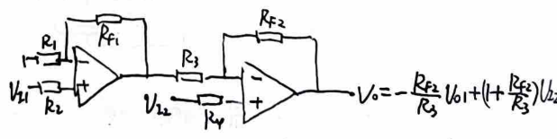
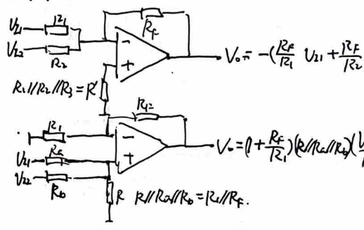
1. Single-ended comparator: non-inverting. 2. Single-ended comparator (capacitor trigger): positive feedback. 3. Comparator: - Negative feedback: input-output (negative feedback diode). - Input (diode): output (ground diode).
4. Pulse waveforms and processing circuits. - Single-ended amplifier ~ RC low-pass: - Charging: \( V_{o} = V_{m}(1 - e^{-\frac{t}{RC}}) \) - Discharging: \( V_{o} = V_{m} e^{-\frac{t}{RC}} \) - Trailing edge: \( t_{f} = RC \ln \frac{0.1V_{m}}{V_{m} - 0.1V_{m}} \approx 2.2RC \)
5. Single-ended comparator (capacitor trigger): - Level trigger: bistable state. - \( V_{R1} = \frac{R_{2}}{R_{1} + R_{3}} V_{2} \) - \( V_{R2} = -\frac{R_{2}}{R_{1} + R_{3}} V_{2} \)
6. Single-ended comparator (capacitor trigger): - Edge trigger: bistable state; single-ended state -> pulse width modulation. - \( t_{w} = RC \ln \frac{V_{ref} - (V_{ref} - V_{o})}{V_{ref} - V_{o}} \) - \( t_{w} \approx 3RC \)
7. Capacitor trigger: - Initial: \( V_{A1} = 0, V_{o} = V_{O2} \) - \( t_{w} = RC \ln \frac{V_{C} - 0}{V_{C} - \frac{2}{3}V_{CC}} \) - \( t_{w} \approx 0 \)
8. Capacitor trigger: - Initial: \( V_{C} = 0, V_{o} = V_{2} \) - \( V_{R1} = \frac{2}{3}V_{CC} \) - \( V_{R2} = \frac{1}{3}V_{CC} \) - \( T = (R_{1} + R_{2}) C \ln \frac{V_{CC} - V_{R1}}{V_{R1} - V_{R2}} \) - \( T = (R_{1} + R_{2}) C \ln \frac{V_{CC} - \frac{2}{3}V_{CC}}{\frac{1}{3}V_{CC} - \frac{1}{3}V_{CC}} \) - \( T = (R_{1} + R_{2}) C \ln \frac{1}{\frac{1}{3}} \) - \( T = (R_{1} + R_{2}) C \ln 3 \)
9. Capacitor trigger: - Initial: \( V_{C} = 0, V_{o} = V_{H} \) - \( V_{R1} = \frac{2}{3}V_{CC} \) - \( V_{R2} = \frac{1}{3}V_{CC} \) - \( T = (R_{1} + R_{2}) C \ln \frac{V_{CC} - V_{R1}}{V_{R1} - V_{R2}} \) - \( T = (R_{1} + R_{2}) C \ln \frac{V_{CC} - \frac{2}{3}V_{CC}}{\frac{1}{3}V_{CC} - \frac{1}{3}V_{CC}} \) - \( T = (R_{1} + R_{2}) C \ln \frac{1}{\frac{1}{3}} \) - \( T = (R_{1} + R_{2}) C \ln 3 \)

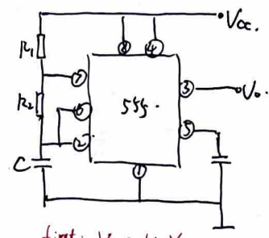
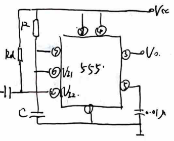
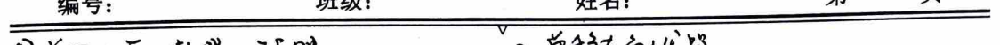
**Analog-to-Digital and Digital-to-Analog Converters**
1. **D/A Converter**
**1.1 Technical Specifications**
- MSB: Dn-1 - LSB: D0 - VLSB: Vom / (2^n - 1) = ΔV - Resolution: VLSB / Vom = 1 / (2^n - 1) - tset: Time for error to enter ±1/2 VLSB
**1.2 Basic Circuits**
- 1) Resistive Network: io = Vref / Rn * (1 - Σ Di * 2^i) - 2) Current: io = I * (1 - Σ Di * 2^i) - 3) Resistive Structure: Vo = Vref * (1 - Σ Di * 2^i)
2. **A/D Converter**
- Sampling rate: fs ≥ 2fm → Hold - Hold time: CH hold time constant - Hold voltage drop rate: CH hold current size - Quantization noise: Rounding method: Δ = 1 / 2^n, error: Δ - Truncation method: Δ = 2 / (2^n - 1), error: Δ / 2
**1.1 Technical Specifications**
- Vm: Maximum input voltage - Vm / 2^n: Minimum input voltage = Resolution
**1.2 Basic Circuits**
- 1) Parallel Binary Type - Time: 1, Device: 2^n - 1 Holders - 2) Segmented Parallel (Segmented) - Time: k + ..., Device: k (2^n - 1) Holders - 3) Feedback Type - Time: (2^n - 1) Tcp - 4) Successive Approximation Type - Time: (n + 2) Tcp, 1/2 Vref → 1/2 Vref → ... → 1/2^n Vref - 5) Dual Integral Type - Time: 2^n Tcp, T1 = 2^n Tcp, T2 = -Vref / 2^n * 2^n Tcp - Vmax = -Vref / R*C * 2^n Tcp

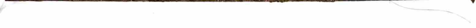
**3.1.1 PNP Single-Stage Amplifier Principle.**
**3.1.2 Using Frequency Equivalent Circuit to Judge the Amplification Effect of AC Signals.**
**3.2.1 Factors Determining Voltage Gain.**
$$A_v = \frac{\beta R_C}{R_E + R_C}, A_v' = -\frac{\beta R_C}{R_E + R_C + R_S}$$
**3.2.2 Elements Determining Voltage Gain.**
$$V_i = -\frac{\beta R_C // R_D}{R_B + R_E} V_o$$
**3.3.1 1) Graphical Method for Static Operating Point.**
Analysis Method: DC Path → Input Characteristic Curve → Solve for IB → Output Characteristic Curve → Solve for Q point.
**2) Graphical Method for Dynamic Range.**
Analysis Method: Input Characteristic Curve → Add AC Signal → Work Point Changes → Output Characteristic Curve → Q Point远离 Saturation Region → Output Voltage Bottoms Out.
**3.3.2 Graphical Method for Static Operating Point.**
**3.3.3 1) Using True Waveform to Judge Distortion Types:**
Bottom Clipping: Saturation Distortion; Top Clipping: Cutoff Distortion.
**3.3.4 Basic Common-Emitter Amplifier.**
1) Static Operating Point: Capacitor Open, DC Path. 2) Dynamic Characteristics: Mid-Frequency Equivalent Circuit with Capacitor Shorted and Capacitor Open at BJT Emitter, Mid-Frequency AC Path. $$A_v = -\frac{\beta R_C}{R_E} \quad (R_{be} = r_{be} + r_{be} = r_{be} + \frac{\beta V_T}{2 \pi})$$ $$R_i = R_E // r_{be} \quad (\text{Division Method})$$ $$R_o = r_{ce} // R_C \quad (V_i \to 0, R_L \to \infty)$$
**3.3.5 Common-Emitter, Common-Base, and Common-Collector Amplifiers (Negative Feedback Stable Static Operating Point) and Common-Collector Capacitor (Mid-Frequency Shorted, Partially Reduces Base Resistance to Increase Gain).**
1) Static Operating Point: Voltage Divider Method, Calculate VB. 2) Dynamic Characteristics: Mid-Frequency Equivalent Circuit, Gain Increase AV = $$\frac{R_i}{R_i + R_S}$$ AV. 3) Dynamic Range: Vom1 = VceQ - Vbe, Vom2 = R'1 * IcQ (Output Waveform).
**3.3.6 Basic Common-Emitter Amplifier, Resistance Biasing.**
DC Path, Mid-Frequency AC Path, Calculate Static and Dynamic Characteristics.
Note: Power Supply Voltage Gain.
$$A_v = \frac{V_o}{V_i} = \frac{V_o}{V_i} \cdot \frac{V_i}{V_s} = \frac{R_i}{R_i + R_S} A_v$$
**3.4.1 Divider Circuit (Common-Emitter Amplifier)** $$A_v1 = A_v2 = -\frac{\beta R_C}{R_E + R_E + R_E}$$ $$A_v1 = A_v2 = -\frac{\beta R_C}{R_E + R_E + R_E}$$ $$R_{o1} = \frac{R_E + r_{be}}{R_E + r_{be} + (\beta + 1) R_E}$$ $$R_{o2} = R_C \quad (\text{Assuming Current Source Resistance is Infinite})$$ $$A_v1 = A_v2 = -\frac{\beta (R_C // R_E)}{R_E + r_{be} + (\beta + 1) R_E}$$ $$A_v1 = A_v2 = -\frac{\beta (R_C // R_E)}{R_E + r_{be} + (\beta + 1) R_E}$$ To make A_v1 and A_v2 close and opposite, R_E should be as large as possible.
3.4.2 Basic Amplifier: Common Emitter (Voltage Amplifier)
(1) Static Characteristics: (Voltage Source with Divider, Including Emitter Resistance)
(2) Dynamic Characteristics: Mid-Frequency Equivalent Circuit
Input Resistance: Divider Method (Input Impedance) Output Resistance: Divider Method (Output Impedance)
3.4.3 Common Collector (CC) Amplifier. Current Source Divider Method!
(1) Static Characteristics: (Voltage Divider Method)
(2) Dynamic Characteristics: Mid-Frequency Equivalent Circuit: All Capacitors Shorted Includes Feedback Resistor Rf, Cannot Use Equivalent Resistance Method Direct Calculation Requires Solving Equations or Using Equivalent Resistance Method
(3) CC Open Circuit Dynamic Characteristics: Emitter Resistance Rb in Parallel with Original Input Resistance. Use Equivalent Resistance Method to Calculate
3.4.4 Common Base: Current Amplifier
(1) Mid-Frequency Circuit: Between CE, Control Current Source gmVe, RE in Parallel with Re
(2) Dynamic Characteristics: Equivalent Resistance Method (Resistor Conversion Method) Re and Equivalent Emitter Resistance in Parallel Output Resistance: Due to Current Source's Disconnection Ro = Rc
3.4.5 Common Base: Unstable Re
Still Can Use Equivalent Resistance Method, But Current Source's Disconnection Vo = -2βRe
3.4.6 Common Base: High Gain Amplifier
Dynamic Characteristics: B-E Equivalent Resistance Method
3.4.7 Common Emitter Complete (Bias) Circuit
(1) Static Characteristics: Fixed Bias
(2) Dynamic Characteristics: Reduced to Common Emitter AC Circuit Base Resistance Feedback: B-E Equivalent Resistance Method
3.5.1 Basic Current Source, Considering Base Width Modulation
$$\begin{cases} \frac{I_{e}}{I_{c}} = \frac{V_{A} + V_{ce2}}{V_{A} + V_{ce1}} \quad (V_{ce2} \text{ is zero}) \\ I_{R} R + V_{ce1} = 6V \\ I_{e} = I_{R} - 2 I_{B} = I_{R} - \frac{2 I_{B}}{\beta} \end{cases}$$
According to this, find I0. Ro = Re = \frac{V_{ce2} + V_{A}}{2} \quad \text{Thus,} \quad Ro = Re = \frac{V_{ce2} + V_{A}}{2}
3.5.2 Basic Current Source
(1) Output Current Io: $$\begin{cases} 2R \cdot R + V_{Re} = V_{cc} \\ 2R = 2\beta I_{B} + 5 I_{B} \\ I_{o} = 3\beta I_{B} \end{cases}$$
(2) Output Resistance: Principle: Current Source Isolated (Assume R = ∞)
3.5.3 Common Emitter Current Source
$$V_{ce}(1 - \beta R_{e}) - R_{e} I_{B}$$
(1) Output Current Io: According to the current source relationship formula. (2) R' Effect: Reduces Current Divider Effect, Improving Output Current Precision. R' Effect: Due to β varying with Ic, R' remains relatively stable, ensuring β does not change significantly.
3.6.1 Single-ended input dual-ended output differential amplifier. 3.6.5 With feedback differential amplifier. 3.6.6 Ratio current source bias differential amplifier.
3.6.2 Ratio current source bias differential amplifier. (1) Static operating point: current source output current → linearity. (2) Dual-ended output differential voltage gain: half circuit method CE. (3) Vpm, Vcm: former not affecting the large signal saturation. (4) Input small signal when the Av, Ri, Ro.
3.6.3 Resistor bias differential amplifier. (1) Static operating point: hard bias. (2) Dual-ended output voltage split into differential and common mode. (3) Common mode input resistance. (4) Input small signal when the Av, Ri, Ro.
3.6.4 Ratio current source bias, with feedback resistor differential amplifier. Static → differential mode gain. (1) Common mode input resistance. (2) Common mode output resistance. (3) Common mode input resistance. (4) Input small signal when the Av, Ri, Ro.
3.6.5 With feedback differential amplifier. Avd, Rcd half circuit method; CE: (B-E equivalent circuit method). (1) Differential mode voltage gain, common mode output resistance, common mode input resistance. (2) With feedback resistor after the common mode gain, calculation is the same. (3) Vcm (Vcm < Vc, Vcm > Vcb).
3.7.1 Class AB and Class B complementary output. (1) Static operating point: Input static bias voltage so Vo = 0. (2) Dynamic range. (3) Maximum output power. P0 = 1/2 Vcm Icm. Pdc = 2Vcc Vcm. η = P0 / Pdc. Vcm take Vcm + Vcm small signal.
Rc = Rcd (1 + βRc3 / Rc3 + Rc3 + Rc1 / Rc2). Rcd = Rcd (1 + βRc3 / Rc3 + Rc3 + Rc1 / Rc2). Rc1 // Rc2. Rc1 // Rc2. Rc1 // Rc2. Rc1 // Rc2. Rc1 // Rc2. Rc1 // Rc2. Rc1 // Rc2. Rc1 // Rc2. Rc1 // Rc2. Rc1 // Rc2. Rc1 // Rc2. Rc1 // Rc2. Rc1 // Rc2. Rc1 // Rc2. Rc1 // Rc2. Rc1 // Rc2. Rc1 // Rc2. Rc1 // Rc2. Rc1 // Rc2. Rc1 // Rc2. Rc1 // Rc2. Rc1 // Rc2. Rc1 // Rc2. Rc1 // Rc2. Rc1 // Rc2. Rc1 // Rc2. Rc1 // Rc2. Rc1 // Rc2. Rc1 // Rc2. Rc1 // Rc2. Rc1 // Rc2. Rc1 // Rc2. Rc1 // Rc2. Rc1 // Rc2. Rc1 // Rc2. Rc1 // Rc2. Rc1 // Rc2. Rc1 // Rc2. Rc1 // Rc2. Rc1 // Rc2. Rc1 // Rc2. Rc1 // Rc2. Rc1 // Rc2. Rc1 // Rc2. Rc1 // Rc2. Rc1 // Rc2. Rc1 // Rc2. Rc1 // Rc2. Rc1 // Rc2. Rc1 // Rc2. Rc1 // Rc2. Rc1 // Rc2. Rc1 // Rc2. Rc1 // Rc2. Rc1 // Rc2. Rc1 // Rc2. Rc1 // Rc2. Rc1 // Rc2. Rc1 // Rc2. Rc1 // Rc2. Rc1 // Rc2. Rc1 // Rc2. Rc1 // Rc2. Rc1 // Rc2. Rc1 // Rc2. Rc1 // Rc2. Rc1 // Rc2. Rc1 // Rc2. Rc1 // Rc2. Rc1 // Rc2. Rc1 // Rc2. Rc1 // Rc2. Rc1 // Rc2. Rc1 // Rc2. Rc1 // Rc2. Rc1 // Rc2. Rc1 // Rc2. Rc1 // Rc2. Rc1 // Rc2. Rc1 // Rc2. Rc1 // Rc2. Rc1 // Rc2. Rc1 // Rc2. Rc1 // Rc2. Rc1 // Rc2. Rc1 // Rc2. Rc1 // Rc2. Rc1 // Rc2. Rc1 // Rc2. Rc1 // Rc2. Rc1 // Rc2. Rc1 // Rc2. Rc1 // Rc2. Rc1 // Rc2. Rc1 // Rc2. Rc1 // Rc2. Rc1 // Rc2. Rc1 // Rc2. Rc1 // Rc2. Rc1 // Rc2. Rc1 // Rc2. Rc1 // Rc2. Rc1 // Rc2. Rc1 // Rc2. Rc1 // Rc2. Rc1 // Rc2. Rc1 // Rc2. Rc1 // Rc2. Rc1 // Rc2. Rc1 // Rc2. Rc1 // Rc2. Rc1 // Rc2. Rc1 // Rc2. Rc1 // Rc2. Rc1 // Rc2. Rc1 // Rc2. Rc1 // Rc2. Rc1 // Rc2. Rc1 // Rc2. Rc1 // Rc2. Rc1 // Rc2. Rc1 // Rc2. Rc1 // Rc2. Rc1 // Rc2. Rc1 // Rc2. Rc1 // Rc2. Rc1 // Rc2. Rc1 // Rc2.
**3.7.2. Class AB Output Stage with Active Load**
(1) Dynamic Range: Negative half is saturated; Positive half is current source output saturated.
(2) Maximum Output Power and Output Efficiency: - Due to the same output voltage in both directions, so Vom and Iom are the same. - Pdc = 2Vcc^2 / R2, P0 = 1/2Vom^2, η = P0 / Pdc.
(3) Icm, Pcm, VbrCEO, Limit Parameters: - Icm: When unidirectional, Icm > Vcc / R2 to ensure the transistor does not saturate. - Pcm: When considering the transistor's power dissipation, Vcm should be greater than Vcc^2 / π^2 R2. - Vcm: When the transistor is in saturation, Vcm should be greater than 2Vcc. - Icm: When the transistor is in saturation, Icm should be greater than 2Vcc.
(4) Current Source Output Maximum Current (to achieve maximum power): - When the transistor is in saturation, the output current is at its minimum. - At this point, Ic ≈ (1 + β) R2 = Vcm.
**3.7.3. Composite Transistor Output Stage with Capacitive Coupling**
(1) Static Working Point: Key: Output Static State Vcc / 2
(2) Maximum Output Power and Output Stage Efficiency: - P0 = 2Vcc^2 / R2, Pdc = 2Vcc^2 / π^2 R2, η = P0 / Pdc.
**3.7.4. Class AB Output Stage with Active Load**
(1) Static Working Point Adjustment: According to R1's DC negative feedback effect, adjust R1 to change the feedback depth and thus change the output voltage. (2) Maximum Forward Voltage: - When D1 and D2 are cut off, V0 is maximized: V0 = Vcc / 2 - [R3(Ic1 + Ic2) + Vce2] - When V0 = 0 + R3Ic2R2, solve for Ic2: Ic2 = (Vcc^2 - Vce2 - R3 + Ic1) / R3(1 + β2)R2. When Ic1 = 0, V0 is maximized, so V0 = Vcc. (3) Maximum Forward Voltage / Clamping Principle: - C3 is very large, the time constant is very large, so V0 remains almost constant. When V0 increases, due to Vc = Vcc not changing, Vc increases. When Vc = Vcc, the current in R4 is in the opposite direction. At this point, V0 increases, T2 can be saturated, and the output voltage can reach Vcc - Vce(1 + β2) - Vcc / 2. The maximum output voltage is calculated by considering the smaller value.
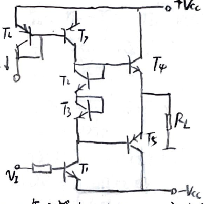

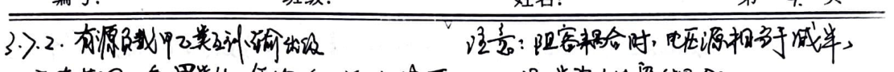
3.8.5. By A_v, find parameters and Bode diagram. Two poles and one zero.
3.8.6. CE frequency. High frequency: large capacitor short circuit. (Capacitor ratio) $$f_H = \frac{1}{2\pi \left[ R_S // R_B + R_{bb'} \right] // R_{be} \left[ C_{be} // \left( 1 + g_m R_e \right) C_{ce} \right]}$$ Low frequency: small capacitor open circuit. (B-E equivalent circuit method, ignore R_b) $$f_L = \sqrt{f_{L1}^2 + f_{L2}^2}$$ $$f_{L1} = \frac{1}{2\pi C_1 \left( R_S + R_{be} \right)}, f_{L2} = \frac{1}{2\pi C_2 \left( R_C + R_E \right)}$$
3.8.7. CE frequency. From Bode diagram and Bode diagram to determine the parameters. $$f_H = \sqrt{f_{P1}^2 + f_{P2}^2}$$ $$f_{P1} = \frac{1}{2\pi C_1 \left( R_S + R_{be} \right)}, f_{P2} = \frac{1}{2\pi C_2 \left( R_C + R_E \right)}$$
3.8.8. CC capacitive coupling, frequency. (Resistance ratio) $$f_H = \frac{1}{2\pi \left[ R_S // R_B + R_{bb'} \right] // R_{be} \left[ C_{be} // \left( 1 + g_m R_e \right) C_{ce} \right]}$$ $$f_L = \sqrt{f_{L1}^2 + f_{L2}^2}$$ $$f_{L1} = \frac{1}{2\pi C_1 \left( R_S + R_{be} \right)}, f_{L2} = \frac{1}{2\pi C_2 \left( R_C + R_E \right)}$$
3.8.9. CC capacitive coupling, frequency. (Resistance ratio) $$f_H = \frac{1}{2\pi \left[ R_S // R_B + R_{bb'} + R_i \right] // R_{be} \left[ C_{be} // \left( 1 + g_m R_e \right) C_{ce} \right]}$$ $$f_L = \sqrt{f_{L1}^2 + f_{L2}^2}$$ $$f_{L1} = \frac{1}{2\pi C_1 \left( R_S + R_{be} \right)}, f_{L2} = \frac{1}{2\pi C_2 \left( R_C + R_E \right)}$$
3.8.10. CC capacitive coupling, frequency. (Resistance ratio) $$f_H = \frac{1}{2\pi \left[ R_S // R_B + R_{bb'} + R_i \right] // R_{be} \left[ C_{be} // \left( 1 + g_m R_e \right) C_{ce} \right]}$$ $$f_L = \sqrt{f_{L1}^2 + f_{L2}^2}$$ $$f_{L1} = \frac{1}{2\pi C_1 \left( R_S + R_{be} \right)}, f_{L2} = \frac{1}{2\pi C_2 \left( R_C + R_E \right)}$$
3.8.11. CC capacitive coupling, frequency. (Resistance ratio) $$f_H = \frac{1}{2\pi \left[ R_S // R_B + R_{bb'} + R_i \right] // R_{be} \left[ C_{be} // \left( 1 + g_m R_e \right) C_{ce} \right]}$$ $$f_L = \sqrt{f_{L1}^2 + f_{L2}^2}$$ $$f_{L1} = \frac{1}{2\pi C_1 \left( R_S + R_{be} \right)}, f_{L2} = \frac{1}{2\pi C_2 \left( R_C + R_E \right)}$$
3.8.12. CC capacitive coupling, frequency. (Resistance ratio) $$f_H = \frac{1}{2\pi \left[ R_S // R_B + R_{bb'} + R_i \right] // R_{be} \left[ C_{be} // \left( 1 + g_m R_e \right) C_{ce} \right]}$$ $$f_L = \sqrt{f_{L1}^2 + f_{L2}^2}$$ $$f_{L1} = \frac{1}{2\pi C_1 \left( R_S + R_{be} \right)}, f_{L2} = \frac{1}{2\pi C_2 \left( R_C + R_E \right)}$$
3.8.13. CC capacitive coupling, frequency. (Resistance ratio) $$f_H = \frac{1}{2\pi \left[ R_S // R_B + R_{bb'} + R_i \right] // R_{be} \left[ C_{be} // \left( 1 + g_m R_e \right) C_{ce} \right]}$$ $$f_L = \sqrt{f_{L1}^2 + f_{L2}^2}$$ $$f_{L1} = \frac{1}{2\pi C_1 \left( R_S + R_{be} \right)}, f_{L2} = \frac{1}{2\pi C_2 \left( R_C + R_E \right)}$$
3.8.14. CC capacitive coupling, frequency. (Resistance ratio) $$f_H = \frac{1}{2\pi \left[ R_S // R_B + R_{bb'} + R_i \right] // R_{be} \left[ C_{be} // \left( 1 + g_m R_e \right) C_{ce} \right]}$$ $$f_L = \sqrt{f_{L1}^2 + f_{L2}^2}$$ $$f_{L1} = \frac{1}{2\pi C_1 \left( R_S + R_{be} \right)}, f_{L2} = \frac{1}{2\pi C_2 \left( R_C +
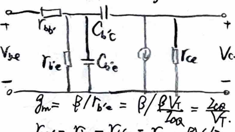

(3) Each capacitor引起的f1. Calculate one by another short circuit.
3.8.9 CB effect. (1) f1: Including Rbb'; current source division; gm Vbe equivalent resistance Rm; two-terminal zero system. f1 = (√Vf1² + Vf2²)⁻¹.
3.8.10. Differential frequency. f1: Half circuit analysis: CE → f1 = [2x(R1 + R2) // R3]. A1 = (βRc) / (R1 + R2).
3.9.1 Two-stage direct-coupled amplifier circuit DC. Voltage source division method; load resistance. Summary: As long as the base resistance is biased, use voltage source division method to solve the static problem.
3.9.2 CC-CE dynamic characteristics. (Mid-term) First stage CC: Ri1 = (R1 + R2) / (β + 1) R1 // R2 Ro1 = R1 // R2 + Rbe A1 = (β + 1) R1 / R1 + Rbe + (β + 1) R1
Second stage CE: Ri2 = Rbe + (β + 1) R2 Ro2 = R2 A2 = β R2 / R2 + Rbe + (β + 1) R2
3.9.3 Current source bias differential amplifier - CE two-stage amplifier dynamic characteristics. First stage: Single-ended differential amplifier. (Mid-term) R1 = 2 R1 + 2 Rbe + 2 (β + 1) R1 R1 = R1 + Rbe + (β + 1) R1 A1 = (β + 1) R1 / R1 + Rbe + (β + 1) R1
Second stage CE: Ri2 = Rbe + (β + 1) R1 Ro2 = R2 A2 = β R2 / R2 + Rbe + (β + 1) R2
(2) Dynamic characteristics. R1 = R1 + Rbe + (β + 1) R1 A1 = (β + 1) R1 / R1 + Rbe + (β + 1) R1
R2 = R2 + Rbe + (β + 1) R2 A2 = (β + 1) R2 / R2 + Rbe + (β + 1) R2
(2) Dynamic characteristics. R1 = R1 + Rbe + (β + 1) R1 A1 = (β + 1) R1 / R1 + Rbe + (β + 1) R1
R2 = R2 + Rbe + (β + 1) R2 A2 = (β + 1) R2 / R2 + Rbe + (β + 1) R2
(2) Dynamic characteristics. R1 = R1 + Rbe + (β + 1) R1 A1 = (β + 1) R1 / R1 + Rbe + (β + 1) R1
R2 = R2 + Rbe + (β + 1) R2 A2 = (β + 1) R2 / R2 + Rbe + (β + 1) R2
(2) Dynamic characteristics. R1 = R1 + Rbe + (β + 1) R1 A1 = (β + 1) R1 / R1 + Rbe + (β + 1) R1
R2 = R2 + Rbe + (β + 1) R2 A2 = (β + 1) R2 / R2 + Rbe + (β + 1) R2
(2) Dynamic characteristics. R1 = R1 + Rbe + (β + 1) R1 A1 = (β + 1) R1 / R1 + Rbe + (β + 1) R1
R2 = R2 + Rbe + (β + 1) R2 A2 = (β + 1) R2 / R2 + Rbe + (β + 1) R2
(2) Dynamic characteristics. R1 = R1 + Rbe + (β + 1) R1 A1 = (β + 1) R1 / R1 + Rbe + (β + 1) R1
R2 = R2 + Rbe + (β + 1) R2 A2 = (β + 1) R2 / R2 + Rbe + (β + 1) R2
(2) Dynamic characteristics. R1 = R1 + Rbe + (β + 1) R1 A1 = (β + 1) R1 / R1 + Rbe + (β + 1) R1
R2 = R2 + Rbe + (β + 1) R2 A2 = (β + 1) R2 / R2 + Rbe + (β + 1) R2
(2) Dynamic characteristics. R1 = R1 + Rbe + (β + 1) R1 A1 = (β + 1) R1 / R1 + Rbe + (β + 1) R1
R2 = R2 + Rbe + (β + 1) R2 A2 = (β + 1) R2 / R2 + Rbe + (β + 1) R2
(2) Dynamic characteristics. R1 = R1 + Rbe + (β + 1) R1 A1 = (β + 1) R1 / R1 + Rbe + (β + 1) R1
R2 = R2 + Rbe + (β + 1) R2 A2 = (β + 1) R2 / R2 + Rbe + (β + 1) R2
(2) Dynamic characteristics. R1 = R1 + Rbe + (β + 1) R1 A1 = (β + 1) R1 / R1 + Rbe + (β + 1) R1
R2 = R2 + Rbe + (β + 1) R2 A2 = (β + 1) R2 / R2 + Rbe + (β + 1) R2
(2) Dynamic characteristics. R1 = R1 + Rbe + (β + 1) R1 A1 = (β + 1) R1 / R1 + Rbe + (β + 1) R1
R2 = R2 + Rbe + (β + 1) R2 A2 = (β + 1) R2 / R2 + Rbe + (β + 1) R2
(2) Dynamic characteristics
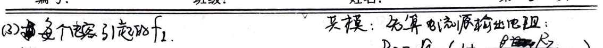
R01 = R1 + 16e1 + R3 / β + 1 R02 = R2 ; R12 = 18e2 / (β + 1) Av3 = (β + 1) * (R2 // R14) / (16e4 + (β + 1) * (R2 // R14)) R13 = 16e0 + (β + 1) * (R2 // R14) R03 = R04 + R02 // R7 Av0 = (β + 1) * R8 / (16e5 + (β + 1) * R8) R14 = 16e5 + (β + 1) * R8 R04 = R8 // 16e5 + R03 / β + 1
Total: Multistage circuit with B-E equivalent resistance method. ① Ri: possibly related to Ri (CC) ② R0: possibly related to R0 (CC) ③ Av: related to load, and subsequent Ai related. ④ B-E equivalent resistance method: note the connection (after conversion), E → B: x(β + 1) (∞ current source) note the current source effect. B → E: / (β + 1).
3.9.6. CE-CB differential amplifier, current source load. Work principle: D1, D2 complementary action, T1, T2 VCE limited to 0.7V. Dynamic performance: A = 16id / 2Vid * β(16e6 + R20) / 216e2. R0 = (16e6 + R20) / (16e0 + ...).
3.9.7. CC-CB differential amplifier - Class B complementary output stage. (current source load).
Work principle: CC-CB-CE voltage gain high.
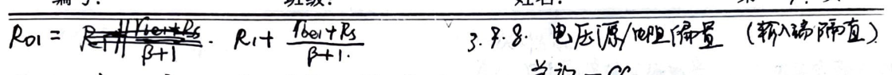
4.2.1 MOSFET Parameter Calculation
(1) gm, rds
Due to idss = $$\frac{1}{2} \frac{w}{L} (V_{ds} - V_{th})^2 (1 + \lambda V_{ds})$$
So gm = $$\frac{\partial idss}{\partial V_{ds}} = k_p \frac{w}{L} (V_{ds} - V_{th})(1 + \lambda V_{ds})$$
= $$\frac{2 Z_{ds}}{V_{ds} - V_{th}}$$
= $$\sqrt{2 k_p \frac{w}{L} I_{ds} (1 + \lambda V_{ds})}$$
And gds = $$\frac{\partial idss}{\partial V_{ds}} = \frac{k_p w}{2} \lambda \cdot (V_{ds} - V_{th})^2$$
= $$\frac{\lambda I_{ds}}{1 + \lambda V_{ds}}$$
= $$\frac{Z_{ds}}{V_A + V_{ds}}$$
(2) fT = $$\frac{g_m}{2 \pi (C_{gs} + C_{gd})}$$
4.2.2 Basic CS
(1) Static Point: If R = $$\frac{1}{2} \frac{w}{L} (V_{ds} - V_{th})^2 (2 \neq 0)$$
Vds = Vgs - 2dR
Note: The source resistor's effect.
(2) Dynamic Performance
Av: For the source resistor CS, ignoring Rds, can be calculated using the BJT's B-E equivalent circuit method. Av = $$-\frac{g_m R_d}{1 + g_m R}$$ (R and R1 are the same, both infinite).
R0: Ignoring rds, then calculated using the current source method. R0 is related to the output circuit.
4.2.3 Basic CS
(1) Static Point: Still two equations, solve for Vds and Vgs.
(1) Static Point: Still two equations, solve for Vds and Vgs.
4.2.4 Basic CG (Considering rds)
(1) Low-frequency small-signal equivalent circuit. gmVgs + rds (ds) is
(2) Dynamic Performance: Due to rds being connected between the input and output, it is the source resistor, using the transconductance method, we get
Av = $$\frac{g_m + gds}{R_i + gds}$$, gd is the transconductance.
Ri = $$\frac{1}{Av gd}$$ > The feedback resistor reduces Av's value.
Ro = R0 // (1 + gmRi)Rds, which is the feedback resistor in parallel with R0.
4.2.5 Basic FET CD (Source Follower, Source Output)
(1) Low-frequency small-signal equivalent circuit (with source and drain capacitors).
(2) Dynamic Performance
Av (not considering rds): $$\frac{g_m R_i}{1 + g_m R_i}$$ (assuming input resistance is infinite)
Ri: The input resistance is not effective.
Ro: The voltage source and current source are equivalent to a resistor; FET has no bottom resistance.
4.3.1 Source Resistor: Voltage Divider
4.3.2 Basic Current Source
$$\frac{Z_E}{I_0} = \frac{V_A + V_{ds}}{V_A + V_{ds}} = \frac{1 + \lambda V_{ds}}{1 + \lambda V_{ds}}$$
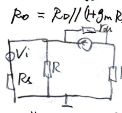
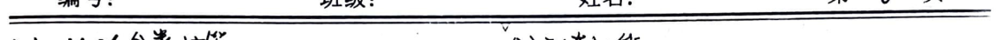
4.3.3. Source-Follower MOSFET Current Source (mirrored). Output current Io: two current equations; constraint equations. 4.3.4. Current Source with PMOS Current Source: dual current source. Output current I0: including channel length modulation: $$\frac{I_{i}}{W_{i}L_{i}} = \frac{I_{j}}{W_{j}L_{j}}$$ 4.3.5. Combined Current Source (mirrored). Using a zener diode as a voltage reference. 4.3.6. Dual Source-Follower with Two Current Sources. Find the current of the mirror transistor: $$\sqrt{w_{i}L_{i}}(V_{os1}-V_{th}) = \cdots = \sqrt{w_{j}L_{j}}(V_{osj}-V_{th})$$ $$(V_{os1}-V_{th}) + \cdots + (V_{osj}-V_{th}) = V_{DD} - V_{th} - i_{th}$$ Find the current of the mirror transistor: $$I_{0} = \lambda = 0$$ 4.3.7. Source-Follower with Cascode Current Source. Output current: same as basic mirrored current source. Output resistance: R0 = (gm1 + gm2) * R0. $$V_{os1} = \frac{1}{g_{ds1}} = \frac{1}{\sum \frac{1}{gm1}(V_{os1}-V_{th})^{2}}$$ $$\frac{V_{os1}-V_{th}}{V_{osj}-V_{th}} = \frac{\sqrt{w_{j}L_{j}}}{\sqrt{w_{i}L_{i}}}$$ 4.3.8. Cascode Current Source. 4.3.9. JFET Single-Transistor Current Source. Since JFET is a voltage-controlled current source, the current I0 can be solved by the current equation and the voltage equation. $$I_{0} = \frac{1}{2} \frac{V_{DD}}{V_{th}}$$ $$I_{0} = \frac{1}{2} \frac{V_{DD}}{V_{th}} (V_{os1} - V_{th})^{2}$$ 4.4.1. CS; E/D; NMOS (1) Dynamic Characteristics $$A_{V} = \frac{g_{m1}}{g_{m1} + g_{ds1} + g_{ds2}}$$ $$R_{0} = \frac{1}{g_{m1} + g_{ds1} + g_{ds2}}$$ (2) f1. Note the units given in the question. $$f_{1} = \frac{1}{\sqrt{f_{p1}^{-2} + f_{p2}^{-2}}}$$ $$f_{p1} = \frac{1}{2\pi R_{S} \sqrt{C_{gb1} + C_{gs1} + C_{gd1} + g_{m1}(C_{gs1} // C_{gd1}) C_{gd1}}}$$ $$f_{p2} = \frac{1}{2\pi (R_{ds1} // R_{0}) (C_{gd1} + C_{gd1} + C_{0})}$$ $$R_{0} = \frac{1}{g_{ds1} + g_{ds2}}$$ $$C_{0} = C_{gb1} + C_{gs1} + C_{gd1} + g_{m1}(C_{gs1} // C_{gd1}) C_{gd1}$$ $$f_{21} = (\sqrt{f_{p1}^{-2} + f_{p2}^{-2}})^{-1}$$ $$A_{V} = \frac{g_{m1}}{g_{m1} + g_{ds1} + g_{ds2}}$$ $$R_{0} = \frac{1}{g_{m1} + g_{ds1} + g_{ds2}}$$
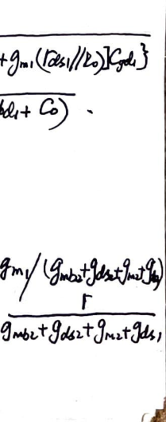

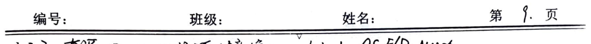
(2) fH: Note the units given in the problem. R0 = (gm1 + gds1 + gds2)^-1 C0 = Cbs2 + Cgs2
f1 = 2π Rs {Cgb1 + Cgs1 + [1 + gm1(Rds1//R0)](gds1)} f2 = 2π (Rds1//R0)(Cds1 + Cgs1 + C0) 4.4.6 CS-CG; common; NMOS
4.4.3 CS; CMOS. (1) Dynamic performance: Vgs1 = -Vgs2 R0 = Rds1 + Rds2 Av = -gm1 / (gds1 + gds2) R0 = Rds1 + Rds2
(2) fH R0 = 1 / gds2 C0 = Cbs2 + Cgs2 fH = (f1^2 + f2^2)^-1
4.4.4 CMOS inverter (positive half of CS) see 4.6.2 section. 4.4.5 (a) CD; E/E; current source load
(1) Static performance: Av = gm1 / (1 + (gm1 + gm2)Rds) Ri = Vii / Z Ri = gm1 / (gm1 + gm2)Rds
(2) Dynamic performance (difference): Av = gm1 / (gm1 + gm2)Rds Ri = Vii / Z Ri = gm1 / (gm1 + gm2)Rds
4.4.7 CS-CG; current source load; compensated transistor. 4.5.1 JFET differential; single JFET current biasing. (1) Static performance Av = gm1 / (1 + (gm1 + gm2)Rds) Ri = Vii / Z Ri = gm1 / (gm1 + gm2)Rds
(2) Dynamic performance (difference) Av = gm1 / (gm1 + gm2)Rds Ri = Vii / Z Ri = gm1 / (gm1 + gm2)Rds
4.5.1 JFET differential; single JFET current biasing. (1) Static performance Av = gm1 / (1 + (gm1 + gm2)Rds) Ri = Vii / Z Ri = gm1 / (gm1 + gm2)Rds
(2) Dynamic performance (difference) Av = gm1 / (gm1 + gm2)Rds Ri = Vii / Z Ri = gm1 / (gm1 + gm2)Rds
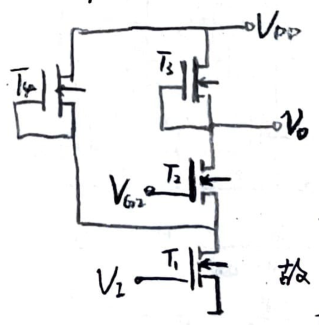

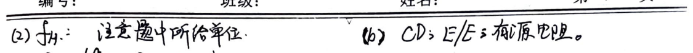
4.5.2 E/D; NMOS differential.
(1) Static operation. Calculate the static current and then use the static input current to calculate the T5's VgsQ.
(2) Dynamic performance. Half circuit method. $$A_{div} = \frac{1}{2}A_{dv} = \frac{1}{2} \frac{g_{m1}}{g_{ds1} + g_{ds2} + g_{mb3}}$$ $$A_{ev1} = \frac{1}{2} \cdot \frac{g_{m1} \left(g_{ds1} + g_{mb3}\right)}{1 + \left(g_{m1} + g_{mb1}\right) \left(2R_{ds3}\right)}$$ $$\approx -\frac{1}{2\left(1 + \eta_1\right) \eta_3 g_{m3} R_{ds5}}$$ $$A_{div} \approx -\frac{1}{2} \frac{g_{m1}}{\eta_3 g_{m3}}; \quad \therefore K_{cm} \approx \left(1 + \eta_1\right) g_{m1} R_{ds5}$$
4.5.5 CMOS differential; single current source load (asymmetric).
(1) Circuit composition: differential; single current source load (single-ended).
(2) Static operation. Symmetric distribution of the circuit (due to the current source load).
(3) Dynamic performance. $$A_{v} = g_{m1} \left(R_{ds1} \parallel R_{ds2}\right)$$ $$R_{o} = R_{ds1} \parallel R_{ds2}$$ $$f_{H} = \frac{1}{2\pi R_{o} C_{L}}$$ (This is the high frequency, so ignore the interelectrode capacitance)
4.5.6 CMOS differential; single current source load (asymmetric).
4.5.3 CMOS differential; single current source load (asymmetric).
4.5.4 CMOS differential; single current source load (asymmetric).
4.5.1
$$V_{o1} = -\frac{1}{2} \frac{g_{m2}}{g_{ds1} + g_{ds2} + g_{m4}} V_{i}$$ $$V_{o} = -\frac{g_{m2}}{g_{ds6} + g_{ds8} + g_{m8}} V_{o1}$$ $$g_{ds2} = \frac{I}{V_{A}} > g_{ds1} = \frac{I}{V_{A}} > g_{m4} = \sqrt{xI} > g_{m2} = \sqrt{xI}$$ $$g_{ds6} = \frac{K2}{V_{A}} > g_{ds8} = \frac{K2}{V_{A}} > g_{m8} = \sqrt{xK2} > g_{m6} = \sqrt{xK2}$$ $$\therefore V_{o} = \frac{1}{2} \left(\frac{2\sqrt{x}}{\frac{2\sqrt{x}}{V_{A}} + \sqrt{x}}\right)^2 V_{i}$$

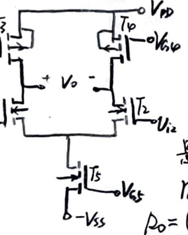
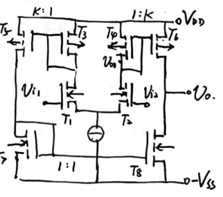
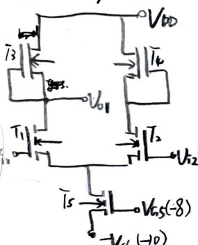
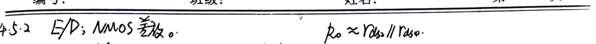
4.6.1 CD互补输出级
4.6.2 CS互补输出级
(1) 静态工作点 (忽略R) key: 静态时Vo及其对称点电位为0 $$I_{DQ3} = I_{DQ1} = \frac{k}{2} \frac{w}{L} (V_{GS1} - V_{th})^2$$ $$V_{SS} = V_{D3} = \sqrt{\frac{I_{DQ3}}{2} \frac{w}{L_3}} + V_{th} = V_{SS1}$$ $$I_{DQ1} = I_{DQ2} = \frac{k}{2} \frac{w}{L_1} (V_{GS1} - V_{th})^2$$
(2) 动态范围. 正向时 $$V_{o} = iR_2 = x (V_{GS1} - V_{th})^2 = x (V_{G1} - V_{th})^2$$ 若Vo大至使T6进入动态电阻区, 正向最大 $$V_{o} = iR_2, i = \frac{k}{2} \frac{w}{L_1} (V_{GS1} - V_{th})^2,$$ $$V_{DS6} = V_{GS6} - V_{th}, V_{S6} = 10, V_{D6} = V_{G1}, V_{S1} = V_{o}$$
(1) 静态工作点 key: Vo=0 $$I_{DQ1} (正向) \rightarrow V_{A1} \rightarrow V_{i} \rightarrow I_{o}$$ $$V_{A2} \rightarrow I_{o}$$
(2) 动态性能 第一级CD, Av1≈1 第二级CS, Av2 = -$$\frac{g_{m1}}{g_{ds1} + g_{ds2} + \frac{1}{R_2}}$$
(当下导通时下斜上。故只有R2作为输出电阻。T2导通时类似)

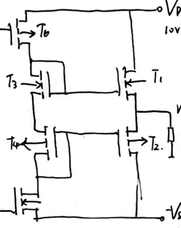


The image contains a detailed handwritten note on electronic circuit design and analysis. Below is the extracted text and mathematical formulas:
---
**L-Type Matching:**
- \( Z_1 = -j R_S \sqrt{\frac{R_L}{R_S} - 1} \) - \( Z_2 = -j R_L \sqrt{\frac{R_S}{R_L} - 1} \) - \( Q = \sqrt{\frac{R_S}{R_L} - 1} \)
**Impedance Matching:**
- \( R_S = \frac{R_L}{1 + Q^2} \) - \( L_S = \frac{L_P}{1 + Q^2} \) - \( Q = \frac{\omega L_S}{R_S} = \frac{R_L}{\omega L_P} \)
**Capacitive Matching:**
- \( R_S = \frac{R_L}{1 + Q^2} \) - \( C_S = (1 + Q^2) C_P \) - \( Q = \frac{1}{\omega C_S R_S} = \omega C_P R_L \)
**Inductive Matching:**
- \( R_L' = \left[ (1 + Q^2) C_1 I \right] R_L \) - \( Q = \frac{1}{\omega C_1 R_L} \)
**Class A:**
- \( Q = 180^\circ \), \( \eta < 5\% \)
**Class B:**
- \( Q = 90^\circ \), \( \eta < 4\% \approx 7\% \)
**Class C:**
- \( Q = 0^\circ \), \( \eta \approx 10\% \) - \( \eta = \frac{1}{2} \frac{\alpha(\omega)}{\omega d(\omega)} \cdot \frac{V_{cc}}{V_{cc}} \)
**Current:**
- \( i(t) = \begin{cases} g \left( V_{cc} \cos(\omega t - \phi) \right) & V > V_{th} \\ 0 & V < V_{th} \end{cases} \)
**Voltage:**
- \( v(t) = \begin{cases} I_m \frac{\cos(\omega t - \phi)}{1 - \cos(\phi)} & |\omega t| < \phi \\ I_m \alpha(\phi) + I_m \alpha(\phi) \cos(2\omega t) + \ldots & |\omega t| > \phi \end{cases} \)
**Frequency Determination:**
- \( Q = \frac{1}{2} - \arctan \left( \frac{1}{\omega L} - \frac{1}{\omega C} \right) \approx \frac{1}{2} - \frac{2}{\omega L} \left( \omega - \omega_0 \right) \) - \( Q = \frac{2 Q}{\omega L} \left( \omega - \omega_0 \right) \)
**Initial Conditions:**
- \( Q = \frac{1}{2} - \arctan \left( \frac{1}{\omega L} - \frac{1}{\omega C} \right) \approx \frac{1}{2} - \frac{2}{\omega L} \left( \omega - \omega_0 \right) \) - \( Q = \frac{2 Q}{\omega L} \left( \omega - \omega_0 \right) \)
**Feedback Loop:**
- \( Q = \frac{1}{2} - \arctan \left( \frac{1}{\omega L} - \frac{1}{\omega C} \right) \approx \frac{1}{2} - \frac{2}{\omega L} \left( \omega - \omega_0 \right) \) - \( Q = \frac{2 Q}{\omega L} \left( \omega - \omega_0 \right) \)
**Stability:**
- \( Q = \frac{1}{2} - \arctan \left( \frac{1}{\omega L} - \frac{1}{\omega C} \right) \approx \frac{1}{2} - \frac{2}{\omega L} \left( \omega - \omega_0 \right) \) - \( Q = \frac{2 Q}{\omega L} \left( \omega - \omega_0 \right) \)
**Locking Condition:**
- \( (w_0 - w_0) t + \cos(\omega t) \rightarrow -\cos(\omega_0 + \omega_0) \sin(\omega t + \phi(\omega)) \)
**PD:**
- \( V_{cc} = f \left[ q(t) \right] \) - \( V_{cc} = \cos(\omega t) \)
**Feedback Loop:**
- \( Q = \frac{1}{2} - \arctan \left( \frac{1}{\omega L} - \frac{1}{\omega C} \right) \approx \frac{1}{2} - \frac{2}{\omega L} \left( \omega - \omega_0 \right) \) - \( Q = \frac{2 Q}{\omega L} \left( \omega - \omega_0 \right) \)
**Stability:**
- \( Q = \frac{1}{2} - \arctan \left( \frac{1}{\omega L} - \frac{1}{\omega C} \right) \approx \frac{1}{2} - \frac{2}{\omega L} \left( \omega - \omega_0 \right) \) - \( Q = \frac{2 Q}{\omega L} \left( \omega - \omega_0 \right) \)
**Combination of Interference:**
- \( P_{f_2} \pm f_{f_1} = f_2 \) - \( P = 0.9 - 1 \) (interference) - \( P = 0.9 - 1 \) (interference)
**Interference:**
- \( P_{f_2} \pm f_{f_1} = f_2 \) - \( P = 0.9 - 1 \) (interference) - \( P = 0.9 - 1 \) (interference)
**Combination of Interference:**
- \( P_{f_2} \pm f_{f_1} = f_2 \) - \( P = 0.9 - 1 \) (interference) - \( P = 0.9 - 1 \
The note appears to be a detailed explanation of a communication system, focusing on the design and operation of a receiver. It discusses various components such as filters, amplifiers, and mixers, and their roles in the system. The text includes mathematical formulas and equations that describe the system's performance metrics, such as noise figure, gain, and bandwidth. The formulas are complex and involve variables like frequency, voltage, and resistance. The note also touches on the principles of phase-locked loops (PLLs) and their role in frequency synthesis. The overall tone is technical and aimed at engineers or students studying communication systems.
**Mathematical Circuit Principles**
1. **Linear Circuit Basic Concepts**
1.1. **Impedance Matching**: - **Maximum Power Transfer**: Narrowband frequency. - $$X_L = -X_S \quad \Rightarrow \quad Z_L = Z_S^*$$ - $$R_L = R_S \quad \Rightarrow \quad P_L = \left(\frac{V_S}{2}\right)^2 / R_S$$ - $$H_P = \frac{V_S^2}{2R_L} / \frac{V_S^2}{2R_S} = 4\frac{R_S}{R_L}$$ - $$T_P = 2\sqrt{\frac{R_S}{R_L}} \quad \text{Reflection Coefficient}$$ - $$\Gamma_P = \frac{Z_L - Z_S^*}{Z_L + Z_S^*} \quad \text{Reflection Coefficient}$$ - $$|\Gamma_P|^2 + |\Gamma_P|^2 = 1$$
1.2. **Transmission Line Impedance Matching**: - **Single Impedance Matching**: Narrowband, wideband. - $$Z_L = Z_0 = \sqrt{\frac{R + j\omega L}{G + j\omega C}} = \sqrt{\frac{L}{C}} \quad \text{(lossless transmission line)}$$ - $$T_V = 1 + \Gamma_0, \quad T_i = 1 - \Gamma_0 \quad \text{Reflection Coefficient}$$ - $$\Gamma_0 = \frac{Z_L - Z_0}{Z_L + Z_0} \quad \text{Reflection Coefficient}$$
1.3. **Minimum Noise Matching**
1.4. **Stability Matching**
2. **Network Parameters and Their Characteristics**
2.1. **Common Two-Port Network Parameters**: - **Impedance Parameters**: Series: $$Z = Z_1 + Z_2$$ - **Admittance Parameters**: Parallel: $$Y = Y_1 + Y_2$$ - **Transmission Parameters**: $$A = A_1 + A_2$$
2.2. **Reflection Coefficient for Impedance Network**: - $$\left|H_{21}\right|^2 (R_L \text{ load}) = \left|T_P\right|^2 (R_L \text{ load})$$ - $$Z_{21} = Z_{21}$$
3. **Matching Network Design**
3.1. **Using Impedance Matching = Impedance Matching**: - $$Z_{01} = \sqrt{\frac{A}{B}} \cdot \sqrt{\frac{B}{C}} = \sqrt{\frac{Z_{11}}{Z_{11}}} = \sqrt{Z_{21} \cdot Z_{21}}$$ - $$Z_{02} = \sqrt{\frac{A}{B}} \cdot \sqrt{\frac{B}{C}} = \sqrt{\frac{Z_{21}}{Z_{21}}} = \sqrt{Z_{11} \cdot Z_{11}}$$ - **End-to-end matching**: - $$T_V = \sqrt{\frac{R}{A}} \cdot \frac{1}{\sqrt{AD} + \sqrt{BC}}$$ - $$T_i = \sqrt{\frac{A}{D}} \cdot \frac{1}{\sqrt{AD} + \sqrt{BC}}$$
3.2. **L-Type Matching Network**: - $$Z_{01} = \sqrt{(Z_1 + Z_2) Z_1}, \quad Z_{02} = \sqrt{Z_2 \cdot \frac{Z_1 Z_2}{Z_1 + Z_2}}$$ - $$\Rightarrow Z_1 = \pm j R_2 \sqrt{\frac{R_1}{R_2} - 1}, \quad Z_2 = \mp j R_2 \sqrt{\frac{R_1}{R_2} - 1}$$

2) For the series resonant circuit, consider the maximum power transmission matching load connection method. a. Transformer connection: $$ R_L' = \left(\frac{N_1}{N_2}\right)^2 R_L $$
b. Capacitor tap: $$ R_L' \approx \left(\frac{C_1 + C_2}{C_1}\right)^2 R_L \quad (C_2 \leq R_L) $$
c. Inductor tap: $$ R_L' \approx \left(\frac{L_1 + L_2}{L_2}\right)^2 R_L \quad (L_2 \leq R_L) $$
Example of L-type matching network: $$ \frac{R_S (R_L)^2}{C} = R_L $$ $$ C' = (1 + Q^2) C $$ $$ R_L' = R_L (1 + Q^2) $$ $$ w_0 = \frac{1}{\sqrt{L C'}} $$
$$ \Rightarrow L = \frac{R_S}{w_0} \sqrt{\frac{R_L}{R_S} - 1} \quad C = \frac{1}{w_0 R_S} \sqrt{\frac{R_L}{R_S} - 1} $$
$$ L' = L (1 + Q^2) $$ $$ R_L' = R_L (1 + Q^2) $$ $$ w_0 = \frac{1}{\sqrt{L C}} $$
$$ \Rightarrow L = \frac{R_S}{w_0} \sqrt{\frac{R_L}{R_S} - 1} \quad C = \frac{1}{w_0 R_S} \sqrt{\frac{R_L}{R_S} - 1} $$
3) Other forms of matching network
1) Half-wavelength transmission line transformer converter
$$ Z_{in} = Z_0 \frac{Z_1 + j Z_2 \tan \beta l}{Z_0 + j Z_2 \tan \beta l} $$
$$ l = \frac{\lambda}{2} \text{ when } Z_{in} = Z_0 $$
**Mathematical Formulas:**
$$ \begin{aligned} & Z_L|_{z=0} = j Z_0 \tan \beta l \\ & Z_L|_{z=\infty} = -j Z_0 \cot \beta l \\ & Z_L|_{z_0 \to z_1} \approx Z_L + j Z_0 \tan \beta l \\ & Z_L|_{z_0 \to z_1} \approx \frac{1}{1/Z_0 + j \tan \beta l / Z_0} \\ & \text{2) Transmission line equivalent capacitance and inductance} \\ & \text{3) Transmission line transformer} \\ & \text{Impedance: upper conductor current = lower conductor current} \\ & \text{Parameters: } Z_1 = Z_0, V_1 = V_0. (\alpha = \beta l \neq 0) \\ & \text{Impedance: each pair of conductors is independent.} \\ & \text{2. Filter} \\ & \text{1. Filter basic concept} \\ & \text{Function: limit signal bandwidth; frequency selection;} \\ & \text{impedance matching, impedance transformation;} \\ & \text{Frequency characteristic correction.} \\ & H(s) = T_p(s) = 2 \sqrt{\frac{R_2}{R_1}} \frac{V_2}{V_1} \frac{R_L}{R_2} = 2 \frac{V_2}{V_1} \\ & \text{Attenuation characteristic: } \alpha(\omega) = 20 \log \frac{1}{1 + (\omega R_1 C_1)^2} \\ & \text{2. LC filter circuit} \\ & \text{Example: Butterworth low-pass} \\ & \text{From } \alpha_p \leq \alpha_{p_{\max}}, \alpha_S \geq \alpha_{S_{\min}} \text{, get } n. \\ & \text{From } n, \omega_C, \text{ get } g_k: g_0 = g_{n+1} = 1, g_k = 2 \sin \frac{2k\pi - 1}{2n} x. \\ & R = g^2 R_2, L = \frac{g^2 R_2}{\omega_C}, C = \frac{g^2}{\omega_C R_2}. \\ & \text{2) Frequency transformation.} \\ & \text{Low-pass prototype filter: } \omega_C = 1, S_p = S / \omega_C. \\ & \text{1) Low-pass to high-pass } (l \to h). \\ & S = \frac{\omega_C}{S_p}. \\ & \text{High-pass prototype filter:} \\ & \alpha_{p} = \alpha_{p_h}, \alpha_{s} = \alpha_{s_h}, \omega_{p} = \frac{\omega_C}{\alpha_{p_h}}, \omega_{s} = \frac{\omega_C}{\alpha_{p_h}}. \\ & \text{2) Low-pass to high-pass } (l \to h). \\ & L = \frac{1}{\omega_C C_p}, C = \frac{1}{\omega_C L_p}. \\ & \text{2) Low-pass to band-pass } (l \to b). \\ & S_p = \frac{1}{B_W} \left( \frac{S_0}{\omega_0} + \frac{S_2}{S} \right), \\ & B_W = (\omega_2 - \omega_1) / \omega_0, \omega_0 = \sqrt{\omega_1 \omega_2}. \\ & \text{Low-pass prototype filter:} \\ & \alpha_{p} = \alpha_{p_b}, \alpha_{s} = \alpha_{s_b}, \\ & \omega_{p} = \max \left\{ \frac{1}{B_W} \left( \frac{\omega_{pb_{1,2}}}{\omega_0} - \frac{\omega_0}{\omega_{pb_{1,2}}} \right) \right\}, \\ & \omega_{s} = \max \left\{ \frac{1}{B_W} \left( \frac{\omega_{sb_{1,2}}}{\omega_0} - \frac{\omega_0}{\omega_{sb_{1,2}}} \right) \right\}. \\ & \text{Band-pass filter:} \\ & L_p \to \frac{L_p}{B_W \omega_0} \text{ and } \frac{B_W}{\omega_0 L_p} \to C_p \to \frac{C_p}{B_W \omega_0} \text{ and } \frac{B_W}{\omega_0 C_p}. \\ & \text{3) Low-pass to band-pass } (l \to h). \\ & \frac{1}{S_p} = \frac{1}{B_W} \left( \frac{S_0}{\omega_0} + \frac{S_2}{S} \right), B_W, \omega_0 \text{ similar.} \\ & \omega_{p} = \cdots, \omega_{s} = \cdots \text{ similar, passband and stopband transition.} \\ & L_p \to \frac{1}{B_W \omega_0 L_p} \text{ and } \frac{B_W}{\omega_0}, C_p \to \frac{1}{B_W \omega_0 C_p} \text{ and } \frac{C_p B_W}{\omega_0}. \end{aligned} $$
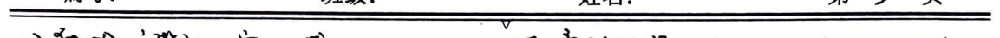
4. Other types of filters introduction. 1. RC active filters. Basic unit: adder, integrator, inverter. Method: calculate the voltage at the circuit node and replace the current with the voltage for the calculation. 2. Gm-C filters. Similar to ① method. 3. Switch capacitor filters.
2. Maximum power transfer matching analysis. $$Z_{in} = \frac{1}{sC_F(1+g_mR_F)} + \frac{1}{R_i + g_m}$$ $$Z_{out} = \frac{1}{sC_F(1+g_mR_S)} + \frac{1}{R_S + g_m}$$
3. High-frequency amplifier. 1. Device model and current source. BJT | MOSFET $$Z_{in1} = \frac{A Z_{out1} + B}{C Z_{out1} + D}, \quad Z_{in2} = \frac{D Z_{out1} + B}{C Z_{out1} + A}$$ $$R_{m11} = \sqrt{\Delta} / 2a_{11}, \quad jX_{m11} = b_{11} / 2a_{11}$$ $$\Delta = Re\left(A^*D + B^*C\right) - |AD - BC|^2$$
1. Condition for stable amplification region. $$\Delta < 0, \text{ cannot achieve stable amplification.}$$ 2. Condition for stable amplification region. $$\Delta > 0, \text{ can achieve stable amplification.}$$ Example: in a transistor, if $$\Delta > 0 \Rightarrow \omega < \frac{2g_{in} g_{out}}{\sqrt{g_{m}^2 - 4 g_{in} g_{out}} \cdot g_{f}}$$
2. Transistor basic state. CE state, Miller effect: $$\left\{\begin{array}{l} \text{In the unstable region, reduce } C_F: \text{neutralize} \\ \text{Increase } g_{in} (\text{input resistance}), g_{out} (\text{output resistance}) \text{ to reduce gain.} \end{array}\right.$$
4. Tuning Amplifier - Capacitive Effect: A·BW↓: Partial Insertion - Resistive Effect: Unstable: Source Cancellation; Neutralization Method
5. Wideband Amplifier - Pushing Main Pole to Origin - Increasing Zero to Form Double Pole - Negative Feedback
6. Automatic Gain Control - Adjustable Gain Amplifier - Control Voltage - Comparator - LPF - Level Detection - Reference Voltage - Position: Receiver Front End, High Level, Main Level - Parameters: G (Gain) = m1 (input range > m0 (output...)) - Realization: Differential Amplifier (Low Impedance), Operational Amplifier (High Impedance)
7. A-Class Power Amplifier - Vomax, Imax limited by tube breakdown characteristics, source voltage. - Lp - Iomax - Vb - Vosat. Voc. Vomax. - Pmax = 1/2 (Ioa · Voc) - Pdc = Ioa · Voc - Vdc = 1/2 (Vomax - Vosat), Ioa = 1/2 Iomax, Ropt = 2(Voc - Vosat) / 2Ioa
8. Amplifier Noise - Interference and Noise: External vs Internal - Device Noise
- Resistance Noise: Additive, Fixed Value, Fixed Amplitude, Fixed Frequency $$\overline{V_n^2} = \frac{2}{R} \cdot \frac{1}{T} \int_{0}^{T} V_n^2(t) dt$$ $$\frac{d\overline{V_n^2}}{df} = W_n(f) \approx 4kT R$$ $$W_n(f) = |H(iw)|^2 W_n(f) \approx 4kT R |H(iw)|^2$$ $$\overline{V_n^2} = \int_{0}^{\infty} W_n(f) df = 4kT R |H(0)|^2 \Delta f$$ $$V_{no, rms} = \sqrt{4kTR |H(0)|^2 \Delta f}$$ $$\overline{V_n^2} = \frac{2}{R} \cdot \frac{1}{T} \int_{0}^{T} V_n^2(t) dt$$ $$\frac{d\overline{V_n^2}}{df} = \frac{1}{R} W_n(f) \approx 4kT G_n = W_n(f)$$ $$W_n(f) = |H(iw)|^2 W_n(f) \approx 4kT G_n |H(iw)|^2$$ $$\overline{V_n^2} = \int_{0}^{\infty} W_n(f) df = 4kT G_n |H(0)|^2 \Delta f$$ $$V_{no, rms} = \sqrt{4kT G_n |H(0)|^2 \Delta f}$$ $$\overline{V_n^2} = \int_{0}^{\infty} 4kT R(f) df, \overline{V_n^2} = \int_{0}^{\infty} 4kT G(f) df$$
- Transistor Noise - Resistance Noise: Wn = 4kT Rdb - Capacitive Noise: Wi = 2q Ic/Co - Capacitive Noise: Wi = 2q Ic (1 - (104f)² / 10) - Flicker Noise: Wi = (kT / f) * (2 / A)
- MOSFET Noise - Channel Hot Noise: Wi = 4kT n gds - Capacitive Noise: Wi = 2q Ic - Capacitive Noise: Wi = 4kT d gds - Capacitive Noise: Wi = 4kT d gds
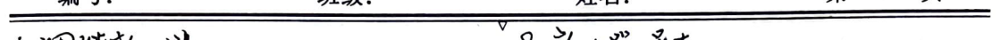
(Subject: ) Math Homework
Page 6
3) Noise Factor 1) F_n and T_e $$F_n = \frac{P_{si}}{P_{so}} = \frac{P_{no}}{G_{op} P_{ni}} = \frac{G_{op} P_{ni} + P_{no}}{G_{op} P_{ni}} = 1 + \frac{P_{no}}{G_{op} P_{ni}}$$ $$T_e = (F_n - 1) T_0 = 290 K = \frac{P_{no}}{G_{op} P_{ni}} \cdot T_0$$ When the signal source is matched to the input: $$P_{si} = \frac{V_n^2}{4 R_s}, P_{no} = \frac{V_n^2}{4 R_s} = k T \Delta f$$ $$F_n = \frac{P_{no}}{G_{op} k T \Delta f}$$ $$T_e = \frac{P_{no}}{G_{op} k T \Delta f}$$ When the network is matched to the input and the output is matched: $$P_{nom} = \frac{V_{no}^2}{4 R_{in}} = k T \Delta f$$ $$F_n = \frac{1}{G_{opm}}$$ $$T_e = (\frac{1}{G_{opm}} - 1) T_0$$ 2) Two-Port Network Noise Model $$V_n = -i_{n2} / Y_{n1}, i_{n2} = i_{2} | u = 0, v = 0$$ $$V_n = -V_{n2} / Z_{n1}, V_{n2} = V_2 | i_n = 0, i_2 = 0$$ $$F_n = F_{nmin} + \frac{R_n}{G_{opm}} \left( Y_{n2} - Y_{sopm} \right)^2 + \frac{G_{opm}}{R_n} \left( Z_{n2} - Z_{sopm} \right)^2$$ 3) Two-Port Network Noise Model $$F_n = 1 + (F_{n1} - 1) + \frac{F_{n2} - 1}{G_{opm}} + \cdots + \frac{F_{nn} - 1}{G_{opm} \cdots G_{opm(n-1)}}$$ $$T_e = T_{e1} + \frac{T_{e2}}{G_{opm}} + \cdots + \frac{T_{en}}{G_{opm} \cdots G_{opm(n-1)}}$$ 4) Receiver Sensitivity and Minimum Detectable Power When the input is matched: $$P_{si(min)} = \left( \frac{P_{so}}{P_{no}} \right)_{min} F_n k T \Delta f$$ $$V_{i(min)} = 2 \sqrt{R_i P_{si(min)}}$$ 5) LNA Matching $$R_s = R_1$$ $$R_1$$ increases the amplifier's noise $$R_1$$ decreases the amplifier's power gain $$R_2$$ and $$L_2$$ form a low-pass filter $$L_2$$ and $$C_{gs}$$ form a low-pass filter To achieve matched input and output: $$\{$$ $$\{$$ $$\{$$ $$\{$$ $$\{$$ $$\{$$ $$\{$$ $$\{$$ $$\{$$ $$\{$$ $$\{$$ $$\{$$ $$\{$$ $$\{$$ $$\{$$ $$\{$$ $$\{$$ $$\{$$ $$\{$$ $$\{$$ $$\{$$ $$\{$$ $$\{$$ $$\{$$ $$\{$$ $$\{$$ $$\{$$ $$\{$$ $$\{$$ $$\{$$ $$\{$$ $$\{$$ $$\{$$ $$\{$$ $$\{$$ $$\{$$ $$\{$$ $$\{$$ $$\{$$ $$\{$$ $$\{$$ $$\{$$ $$\{$$ $$\{$$ $$\{$$ $$\{$$ $$\{$$ $$\{$$ $$\{$$ $$\{$$ $$\{$$ $$\{$$ $$\{$$ $$\{$$ $$\{$$ $$\{$$ $$\{$$ $$\{$$ $$\{$$ $$\{$$ $$\{$$ $$\{$$ $$\{$$ $$\{$$ $$\{$$ $$\{$$ $$\{$$ $$\{$$ $$\{$$ $$\{$$ $$\{$$ $$\{$$ $$\{$$ $$\{$$ $$\{$$ $$\{$$ $$\{$$ $$\{$$ $$\{$$ $$\{$$ $$\{$$ $$\{$$ $$\{$$ $$\{$$ $$\{$$ $$\{$$ $$\{$$ $$\{$$ $$\{$$ $$\{$$ $$\{$$ $$\{$$ $$\{$$ $$\{$$ $$\{$$ $$\{$$ $$\{$$ $$\{$$ $$\{$$ $$\{$$ $$\{$$ $$\{$$ $$\{$$ $$\{$$ $$\{$$ $$\{$$ $$\{$$ $$\{$$ $$\{$$ $$\{$$ $$\{$$ $$\{$$ $$\{$$ $$\{$$ $$\{$$ $$\{$$ $$\{$$ $$\{$$ $$\{$$ $$\{$$ $$\{$$ $$\{$$ $$\{$$ $$\{$$ $$\{$$ $$\{$$ $$\{$$ $$\{$$ $$\{$$ $$\{$$ $$\{$$ $$\{$$ $$\{$$ $$\{$$ $$\{$$ $$\{$$ $$\{$$ $$\{$$ $$\{$$ $$\{$$ $$\{$$ $$\{$$ $$\{$$ $$\{$$ $$
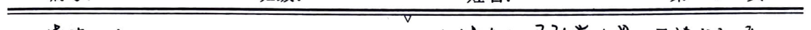
### Nonlinear Circuit Analysis Methods
#### 1. Analysis Methods - **BJT**: $$ i_{c} = I_{cc} \left( e^{\frac{qV_{B}}{nT}} - 1 \right) $$ - **MOS**: $$ i_{d} = \frac{1}{2} \mu C_{x} \frac{W}{L} \left( V_{gs} - V_{th} \right)^{2} $$ - **BJT Differential**: $$ i_{c} = I_{o} \tan \frac{V_{id}}{2V_{T}} $$ - **MOS Differential**: $$ i_{d} = V_{id} \sqrt{2 \beta I_{o} - \beta^{2} V_{id}} $$
#### 2. Frequency Components - **Single Frequency Input**: $$ v_{i}(t) = V_{im} \cos \omega t $$ $$ i_{c}(t) = a_{0} + a_{1} V_{im} \cos \omega t + a_{2} V_{im}^{2} \cos^{2} \omega t + \cdots $$ - **Harmonics**: - Even harmonics only depend on even harmonics, odd... - m-order harmonics only depend on m-order harmonics. - **Power Compression**: $$ i_{c}(t) = \left( a_{1} + \frac{3}{4} a_{3} V_{im}^{2} \right) V_{i}(t) $$ $$ a_{3} < 0 $$ $$ 10 \text{dB Compression Point}: V_{im} = \sqrt{0.145 \left| \frac{a_{3}}{a_{1}} \right|} $$
#### 3. Dual Frequency Input - **Single Frequency Input**: $$ v_{i}(t) = V_{im} \cos \omega t + V_{em} \cos \omega t $$ $$ i_{c}(t) = \text{DC} + \text{First Harmonic} + \text{Second Harmonic} + \cdots $$ - **Intermodulation Distortion**: - When \( V_{im} \ll V_{em} \), \( a_{3} < 0 \) - $$ i_{w1} = \left( a_{1} + \frac{3}{4} a_{3} V_{im}^{2} + \frac{3}{2} a_{3} V_{em}^{2} \right) V_{m} \cos \omega t + \left( a_{1} + \frac{3}{2} a_{3} V_{m}^{2} \right) V_{m} \cos \omega t + \frac{3}{2} a_{3} V_{m}^{2} V_{em}^{2} \cos 2 \omega t + \frac{3}{2} a_{3} V_{m}^{2} V_{em}^{2} \cos 2 \omega t $$
#### 4. Cross Modulation Distortion - **Cross Modulation Distortion**: - When \( V_{im} \ll V_{em} \), \( V_{2m} \), \( a_{3} < 0 \) - $$ i_{w1} = \left( a_{1} + \frac{3}{4} a_{3} V_{im}^{2} + \frac{3}{2} a_{3} V_{em}^{2} \right) V_{m} \cos \omega t + \left( a_{1} + \frac{3}{2} a_{3} V_{m}^{2} \right) V_{m} \cos \omega t + \frac{3}{2} a_{3} V_{m}^{2} V_{em}^{2} \cos 2 \omega t + \frac{3}{2} a_{3} V_{m}^{2} V_{em}^{2} \cos 2 \omega t $$
#### 5. Cross Modulation Distortion Analysis - **Cross Modulation Distortion**: - When \( V_{im} \ll V_{em} \), \( V_{2m} \), \( a_{3} < 0 \) - $$ i_{w1} = \left( a_{1} + \frac{3}{4} a_{3} V_{im}^{2} + \frac{3}{2} a_{3} V_{em}^{2} \right) V_{m} \cos \omega t + \left( a_{1} + \frac{3}{2} a_{3} V_{m}^{2} \right) V_{m} \cos \omega t + \frac{3}{2} a_{3} V_{m}^{2} V_{em}^{2} \cos 2 \omega t + \frac{3}{2} a_{3} V_{m}^{2} V_{em}^{2} \cos 2 \omega t $$
#### 6. Cross Modulation Distortion Analysis - **Cross Modulation Distortion**: - When \( V_{im} \ll V_{em} \), \( V_{2m} \), \( a_{3} < 0 \) - $$ i_{w1} = \left( a_{1} + \frac{3}{4} a_{3} V_{im}^{2} + \frac{3}{2} a_{3} V_{em}^{2} \right) V_{m} \cos \omega t + \left( a_{1} + \frac{3}{2} a_{3} V_{m}^{2} \right) V_{m} \cos \omega t + \frac{3}{2} a_{3} V_{m}^{2} V_{em}^{2} \cos 2 \omega t + \frac{3}{2} a_{3} V_{m}^{2} V_{em}^{2} \cos 2 \omega t $$
#### 7. Cross Modulation Distortion Analysis - **Cross Modulation Distortion**: - When \( V_{im} \ll V_{em} \), \( V_{2m} \), \( a_{3} < 0 \) - $$ i_{w1} = \left( a_{1} + \frac{3}{4} a_{3} V_{im}^{2} + \frac{3}{2} a_{3} V_{em}^{2} \right) V_{m} \
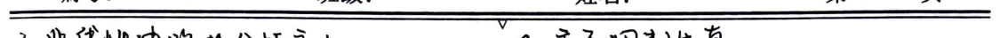
4. Power Amplifier ① A Class: θ = 180°, η < 50% ② B Class: θ = 90°, η < π/4 ≈ 79% I_m = Vp/Rc, Pout = Vp^2/2Rc Iavg = 2/π ∫_0^π Vc sin(ωt) dt = 2/π * Vc/Rc, Pdc = Iavg * Vc ③ C Class: θ < 90°, η = 1/2 * α(θ) * θ < 100% Pout = 1/2 * Ic * Vcm = 1/2 * Im * α(θ) * Vcm Pdc = Ic * Vcc = 1/2 * Im * α(θ) * Vcm * η ④ D Class: θ = 90°, η < 10% Transistor Switch State Vc = Vces + (Vcc - 2Vces) * Switch Function (cos(ωt)) Vc = 2/π * (Vcc - 2Vces) * cos(ωt) Im = 2/π * (Vcc - 2Vces) Io = α(θ) * Im = 2/π * Im η = 1/2 * Vcm / Rc = Vcc - 2Vces / Vcc
5. Analog Multiplier ① Gilbert Multiplier: Vc = Rc * Ic * tanh(Vs / 2V) * tanh(Vr / 2V) Linear Input Range Small Temperature Stability Good
② Common Mode Analog Multiplier: Vc = 2 * Rc * Ic * tanh(Vs / 2V) * tanh(Vr / 2V) Linear Input Range Small Temperature Stability Good
6. Frequency Converter ① Time-variant Linear Circuit ② Frequency Converter Technical Specifications {Down Conversion: Difference Frequency Up Conversion: Sum Frequency} Input: Small Signal Control Large Signal: Local Oscillator (External Input is the Frequency Divider) 1) Frequency Gain Ap = 1/2 * Vc^2 / 1/8 * Vc^2 / Rc {No Source: Ap < 1: Large Linear Range, Fast Speed With Source: Ap > 1: Good Noise Performance} 2) Noise Factor Fn = Srf / Nrf Srf / Nrf 3) Frequency Conversion Using 10dB Power Attenuation and Third-Order Intermodulation Measurement 4) Working Stability Control Signal (Local Oscillator) Frequency Stability 5) Port Impedance Matching Local Oscillator → RF: Influences Previous LNA, Radiates Out RF → Local Oscillator: Frequency Pulling Local Oscillator → Intermediate Frequency: Influences Intermediate Frequency Local Oscillator → Intermediate Frequency: Influences Intermediate Frequency Three Port Impedance Matching

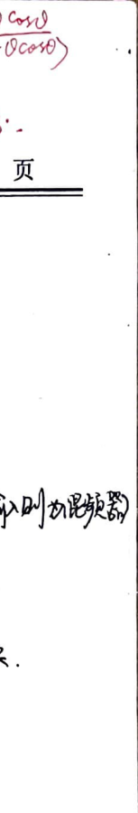
3. Variable frequency basic working principle 1) Utilize component nonlinear characteristics Saturation area MOSFET: high gain, less distortion. 2) Utilize switch (or sampling) Dual balanced mixer: bidirectional switch, only odd frequency components. 3) Utilize analog multiplier Input impedance good; has gain (no aftereffect) Linear range small, IIP3 small.
4. Variable frequency interference 1) Intermediate frequency interference: Phenomenon: high frequency to intermediate frequency suppression not enough. Solution: add intermediate frequency filter before. 2) Image frequency interference Phenomenon: mixed frequency with local oscillator. Solution: - Add image frequency suppression filter before. - Increase intermediate frequency frequency, can use secondary frequency conversion. - Zero intermediate frequency scheme. - Image frequency suppression receiver scheme. Example: Hartley
3) Combination of sideband interference. Reason: high frequency or mixer nonlinearity, produces interference sideband. Solution: improve high frequency linearity; reduce mixer nonlinearity. 4) Combination frequency interference (internal) Phenomenon: due to high frequency or mixer nonlinearity, input (intermediate frequency) sideband and local oscillator sideband combine into intermediate frequency. $$ Pf_2 \pm qf_s = f_2 $$ Solution: choose appropriate intermediate frequency; limit mixer input amplitude. 5) Cross modulation interference Phenomenon: two amplitude modulation signals due to high frequency and mixer nonlinearity. Solution: high frequency input limit; improve front-end selectivity. 6) Intermodulation interference. ~ combination of sidebands. Phenomenon: multiple interference and local oscillator mixed into intermediate frequency, howling. $$ | mf_2 \pm pf_1 \pm qf_{n2} | = f_2 $$ Solution: improve front-end selectivity.
5. Sine wave oscillator 1. Basic situation Direct current → alternating current; feedback/impedance; oscillation/oscillation frequency Mixer local oscillator Modulation/demodulation carrier/local oscillator. Clock reference signal
1. Sufficient conditions. 2. Feedback oscillator basic working principle. $$ V_0 = \frac{A(j\omega)}{1 - A(j\omega)F(j\omega)} V_i $$ $$ | A(j\omega)F(j\omega) | = 1 \quad ( = | Q_m Z_0 F | ) $$ $$ \left\{ \begin{array}{l} \text{Sufficient condition:} \\ A(j\omega)F(j\omega) = 1 \quad ( = | Q_m Z_0 F | ) \end{array} \right. $$

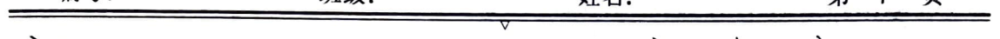
The phase shift φm + φf almost does not change with ω. The larger the phase shift, the closer the resonant frequency is to ω. Resonant condition: 1. Mutual coupling F = 1/2 2. Three-point form Vf = X2 / (X1 + X2) Vce = -X2 / X1 (gmRpVbe) = (X2 / X1) gmRpV1 To ensure positive feedback, X1 and X2 (connected to the base) should be of the same nature. 1) Capacitive (capacitive three-point form) 2) Inductive (inductive three-point form) 3) Resistive: C1 + C2 + C3 = 1 / (ω²L) 1 / C = 1 / C3 + 1 / (C1 + C2) + 1 / (C2 + C3) C3 << C1 + C2, C2 + C3 f ≈ 1 / (2π√(C1C2)) Rf = (C3 / (C1 + C2))^2 Rf (partially inserted) Advantages: Feedback adjustment (C1/C2) and frequency adjustment (C3) are separated. Disadvantages: Frequency adjustment will affect the amplitude. 4) Inductive: C ≈ C3 + C4, adjust C4 to set the oscillation frequency, maintaining stable amplitude. f ≈ 1 / (2π√(C3 + C4)²) C3 cannot be too large, C4 has a small adjustment range. C3 cannot be too small, the insertion coefficient is small, the oscillation amplitude is small. 3. LC Oscillator Circuit Analysis Transformer LC Oscillator Ri Rf Ri Rf Ri Rf Ri Rf Ri Rf Ri Rf Ri Rf Ri Rf Ri Rf Ri Rf Ri Rf Ri Rf Ri Rf Ri Rf Ri Rf Ri Rf Ri Rf Ri Rf Ri Rf Ri Rf Ri Rf Ri Rf Ri Rf Ri Rf Ri Rf Ri Rf Ri Rf Ri Rf Ri Rf Ri Rf Ri Rf Ri Rf Ri Rf Ri Rf Ri Rf Ri Rf Ri Rf Ri Rf Ri Rf Ri Rf Ri Rf Ri Rf Ri Rf Ri Rf Ri Rf Ri Rf Ri Rf Ri Rf Ri Rf Ri Rf Ri Rf Ri Rf Ri Rf Ri Rf Ri Rf Ri Rf Ri Rf Ri Rf Ri Rf Ri Rf Ri Rf Ri Rf Ri Rf Ri Rf Ri Rf Ri Rf Ri Rf Ri Rf Ri Rf Ri Rf Ri Rf Ri Rf Ri Rf Ri Rf Ri Rf Ri Rf Ri Rf Ri Rf Ri Rf Ri Rf Ri Rf Ri Rf Ri Rf Ri Rf Ri Rf Ri Rf Ri Rf Ri Rf Ri Rf Ri Rf Ri Rf Ri Rf Ri Rf Ri Rf Ri Rf Ri Rf Ri Rf Ri Rf Ri Rf Ri Rf Ri Rf Ri Rf Ri Rf Ri Rf Ri Rf Ri Rf Ri Rf Ri Rf Ri Rf Ri Rf Ri Rf Ri Rf Ri Rf Ri Rf Ri Rf Ri Rf Ri Rf Ri Rf Ri Rf Ri Rf Ri Rf Ri Rf Ri Rf Ri Rf Ri Rf Ri Rf Ri Rf Ri Rf Ri Rf Ri Rf Ri Rf Ri Rf Ri Rf Ri Rf Ri Rf Ri Rf Ri Rf Ri Rf Ri Rf Ri Rf Ri Rf Ri Rf Ri Rf Ri Rf Ri Rf Ri Rf Ri Rf Ri Rf Ri Rf Ri Rf Ri Rf Ri Rf Ri Rf Ri Rf Ri Rf Ri Rf Ri Rf Ri Rf Ri Rf Ri Rf Ri Rf Ri Rf Ri Rf Ri Rf Ri Rf Ri Rf Ri Rf Ri Rf Ri Rf Ri Rf Ri Rf Ri Rf Ri Rf Ri Rf Ri Rf Ri Rf Ri Rf Ri Rf Ri Rf Ri Rf Ri Rf Ri Rf Ri Rf Ri Rf Ri Rf Ri Rf Ri Rf Ri Rf Ri Rf Ri Rf Ri Rf Ri Rf Ri Rf Ri Rf Ri Rf Ri Rf Ri Rf Ri Rf Ri Rf Ri Rf Ri Rf Ri Rf Ri Rf Ri Rf Ri Rf Ri Rf Ri Rf Ri Rf Ri Rf Ri Rf Ri Rf Ri Rf Ri Rf Ri Rf Ri Rf Ri Rf Ri Rf Ri Rf Ri Rf Ri Rf Ri Rf Ri Rf Ri Rf Ri Rf Ri Rf
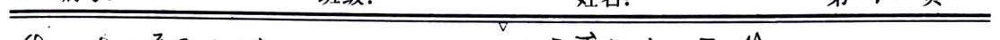
4. Oscillator frequency stability. ③ Tuned crystal oscillator (fundamental and odd harmonics).
5. Crystal Oscillator. $$ f \propto \frac{1}{\text{resistance}} $$ 串: $f_0 = \frac{1}{2\pi\sqrt{L_0C_0}}$ 并: $f_p = \frac{1}{2\pi\sqrt{L_0C_0}}$ (no R4)
6. Other Oscillator Forms. ① Wien Bridge Oscillator. ② RC Phase Shift Oscillator ③ Integrator Oscillator ④ Varactor Oscillator
$$ f < f_0: \text{oscillation condition} $$ $$ f > (2k+1)f: \text{feedback condition} $$ $$ f = (2k+1)f: \text{resonant condition} $$
1. Series Crystal Oscillator: Crystal works at high Q short circuit (f=f0)
2. Parallel Crystal Oscillator: Crystal works at low Q (f0 $$ f_1 \approx (1 + \frac{1}{2} \frac{1}{C_0} Q) f_0, \text{and} f_2 \approx (1 - \frac{1}{2} \frac{1}{C_0} Q) f_0 $$
$$ f_2 - f_1 \approx f_p - f_n \approx \frac{1}{2} \frac{C_0}{C_1} f_0 \approx 0 $$ $$ \text{Capacitor} $$ $$ \text{Capacitor} $$ $$ \text{Capacitor} $$ $$ \text{Capacitor} $$ $$ \text{Capacitor} $$ $$ \text{Capacitor} $$ $$ \text{Capacitor} $$ $$ \text{Capacitor} $$ $$ \text{Capacitor} $$ $$ \text{Capacitor} $$ $$ \text{Capacitor} $$ $$ \text{Capacitor} $$ $$ \text{Capacitor} $$ $$ \text{Capacitor} $$ $$ \text{Capacitor} $$ $$ \text{Capacitor} $$ $$ \text{Capacitor} $$ $$ \text{Capacitor} $$ $$ \text{Capacitor} $$ $$ \text{Capacitor} $$ $$ \text{Capacitor} $$ $$ \text{Capacitor} $$ $$ \text{Capacitor} $$ $$ \text{Capacitor} $$ $$ \text{Capacitor} $$ $$ \text{Capacitor} $$ $$ \text{Capacitor} $$ $$ \text{Capacitor} $$ $$ \text{Capacitor} $$ $$ \text{Capacitor} $$ $$ \text{Capacitor} $$ $$ \text{Capacitor} $$ $$ \text{Capacitor} $$ $$ \text{Capacitor} $$ $$ \text{Capacitor} $$ $$ \text{Capacitor} $$ $$ \text{Capacitor} $$ $$ \text{Capacitor} $$ $$ \text{Capacitor} $$ $$ \text{Capacitor} $$ $$ \text{Capacitor} $$ $$ \text{Capacitor} $$ $$ \text{Capacitor} $$ $$ \text{Capacitor} $$ $$ \text{Capacitor} $$ $$ \text{Capacitor} $$ $$ \text{Capacitor} $$ $$ \text{Capacitor} $$ $$ \text{Capacitor} $$ $$ \text{Capacitor} $$ $$ \text{Capacitor} $$ $$ \text{Capacitor} $$ $$ \text{Capacitor} $$ $$ \text{Capacitor} $$ $$ \text{Capacitor} $$ $$ \text{Capacitor} $$ $$ \text{Capacitor} $$ $$ \text{Capacitor} $$ $$ \text{Capacitor} $$ $$ \text{Capacitor} $$ $$ \text{Capacitor} $$ $$ \text{Capacitor} $$ $$ \text{Capacitor} $$ $$ \text{Capacitor} $$ $$ \text{Capacitor} $$ $$ \text{Capacitor} $$ $$ \text{Capacitor} $$ $$ \text{Capacitor} $$ $$ \text{Capacitor} $$ $$ \text{Capacitor} $$ $$ \text{Capacitor} $$ $$ \text{Capacitor} $$ $$ \text{Capacitor} $$ $$ \text{Capacitor} $$ $$ \text{Capacitor} $$ $$ \text{Capacitor} $$ $$ \text{Capacitor} $$ $$ \text{Capacitor} $$ $$ \text{Capacitor} $$ $$ \text{Capacitor} $$ $$ \text{Capacitor} $$ $$ \text{Capacitor} $$ $$ \text{Capacitor} $$ $$ \text{Capacitor} $$ $$ \text{Capacitor} $$ $$ \text{Capacitor} $$ $$ \text{Capacitor} $$ $$ \text{Capacitor} $$ $$ \text{Capacitor} $$ $$ \text{Capacitor} $$ $$ \text{Capacitor} $$ $$ \text{Capacitor} $$ $$ \text{Capacitor} $$ $$ \text{Capacitor} $$ $$ \text{Capacitor} $$ $$ \text{Capacitor} $$ $$ \text{Capacitor} $$ $$ \text{Capacitor} $$ $$ \text{Capacitor} $$ $$ \text{Capacitor} $$ $$ \text{Capacitor} $$ $$ \text{Capacitor} $$ $$ \text{Capacitor} $$ $$ \text{Capacitor} $$ $$ \text{Capacitor} $$ $$ \text{Capacitor} $$ $$ \text{Capacitor} $$ $$ \text{Capacitor} $$ $$ \text{Capacitor} $$ $$ \text{Capacitor} $$ $$ \text{Capacitor} $$ $$ \text{Capacitor} $$ $$ \text{Capacitor} $$ $$ \text{Capacitor} $$ $$ \text{Capac
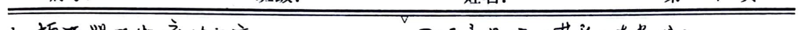
**Subject:** Mathematics Homework
**Page:** 12
**Section:** Modulation and Demodulation
**Modulation Causes:** - Antenna Size Constraints - Channel Reuse - Reducing Interference
1. Amplitude Modulation - Standard Amplitude Modulation: $$ V_{am}(t) = [V_{cm} + V_{f}(t)] \cos(\omega t) $$ $$ = (V_{cm} + V_{cm} \cos(\omega t)) \cos(\omega t) $$ $$ = V_{cm}(1 + m_a \cos(\omega t)) \cos(\omega t) $$ $$ m_a < 1, \text{ otherwise over-modulation} $$ - Carrier Power: $$ P_c = \frac{1}{2} \frac{V_{cm}^2}{R_c} $$ - Upper Sideband Power: $$ P_u = \frac{1}{2} \left(\frac{1}{2} m_a V_{cm}\right)^2 / R_c = \frac{1}{4} m_a^2 P_c $$ - Lower Sideband Power: $$ P_l = \frac{1}{2} \left(\frac{1}{2} m_a V_{cm}\right)^2 / R_c = \frac{1}{4} m_a^2 P_c $$ - Total Power: $$ P = P_c (1 + \frac{m_a^2}{2}) < \frac{3}{2} P_c $$ - Advantages: Large carrier power, easy to demodulate - Disadvantages: More than half of the power is wasted on the carrier - Time Domain: Includes sideband modulated signals - Frequency Domain: Linear frequency shift, half wasted
1) Modulation: Modulator (mixer)
2) Demodulation: Local Oscillator + Bandpass Filter + Demodulator
a. Coherent Demodulation: - Frequency (local oscillator or phase coherent) + Low Pass - Non-Coherent Demodulation: - Small Signal Square Law Detection: Power Indicator - Large Signal Peak Detection: $$ r_a Q \ll R_c Q < T_a $$ - Suppressed Carrier Demodulation: - Modulation: Local Oscillator + Bandpass (to prevent low and high frequency components) - Demodulation: Local Oscillator + Bandpass + Filter
3) Single Sideband Modulation: - $$ V_{SSB_R} = \frac{1}{2} V_{f}(t) \cos(\omega t) - \frac{1}{2} V_{f}'(t) \sin(\omega t) $$ - $$ V_{SSB_L} = \frac{1}{2} V_{f}(t) \cos(\omega t) + \frac{1}{2} V_{f}'(t) \sin(\omega t) $$ - Where, $$ V_{f}'(t) = IFT\left(j V_{f}(t) \operatorname{sgn}(w)\right) $$
1) Modulation: - Superheterodyne Method: Lower Q value requirement
2) Demodulation: - Hartley Method: Before - Weaver Method: Weaver
$$ K_0 = \frac{V_{o}}{V_{cm}} = \frac{V_{o}}{V_{cm}} $$
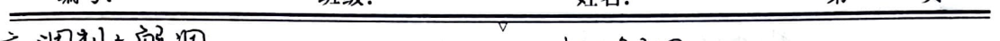
2) Demodulation: Add a local oscillator, lock loop to extract the baseband signal. ② Frequency抑制接收方案 Hartley, Weaver.
Advantages: Low power consumption, wide bandwidth, high signal-to-noise ratio. Disadvantages: Complex filtering, phase, and amplitude recovery equipment. Not suitable for low frequency transmission.
④ Sideband抑制幅. The transmitted sideband and the suppressed sideband are anti-symmetric. ① Modulation: Similar to SSB, the modulator is simple. ② Demodulation: Add a local oscillator + lock loop; phase inversion required. ⑤ Amplitude Modulation. The carrier wave and the baseband signal.
Total transmission: Superheterodyne receiver. ① Intermediate frequency realization of channel selection: Low Q. ② Demodulator before the amplifier is divided into low and intermediate frequencies. ③ High gain (AGC) amplifier has high gain (non-linearity) and low noise. ④ Intermediate frequency amplifier has high gain, stability, and ease of implementation. ⑤ Fixed intermediate frequency demodulation.
① Double-sideband modulation scheme. ② Zero-frequency scheme. ③ Realization of frequency modulation methods and circuits. ① Technical indicators. ② Frequency stability f~V. Maximum frequency deviation Δfm (requires constant bandwidth). Solve: Frequency modulation before pre-amplification: High pass (filter) to produce. After demodulation, low pass (filter) to produce.

2) Upconversion: After modulation, the carrier frequency increases. b. Variable capacitor part connected.
3) Direct frequency modulation circuit.
Given \( V_{IF}(t) = V_{cm} \cos \omega t \), then $$ C_{j} = \frac{C_{0}}{1 + \left( V_{B} + V_{cm} \cos \omega t \right) / \phi}^{2} $$ $$ = \frac{C_{0}}{\left( 1 + \frac{V_{cm}}{\phi} \right)^{2} \left[ 1 + \frac{V_{cm} \cos \omega t}{V_{B} + \phi} \right]^{2}} $$ $$ = \frac{C_{0}'}{\left( 1 + m_{c} \cos \omega t \right)^{2}} $$
\( C_{0}' \): DC bias voltage \( V_{B} \) under the capacitor \( m_{c} = \frac{V_{cm}}{V_{B} + \phi} < 1 \): Capacitive modulation.
a. Variable capacitor fully connected.
$$ f = \frac{1}{2 \pi \sqrt{L C_{j}}} = \frac{1}{2 \pi \sqrt{L C_{0}' / \left( 1 + m_{c} \cos \omega t \right)^{2}}} $$ $$ = f_{c} \left( 1 + \frac{1}{2} m_{c} \cos \omega t + \frac{1}{2!} \frac{1}{2} \left( \frac{1}{2} - 1 \right) m_{c} \cos \omega t \right)^{2} + \cdots $$ $$ = f_{c} \left( 1 + \frac{1}{2} m_{c} \cos \omega t + \frac{1}{2!} \frac{1}{2} \left( \frac{1}{2} - 1 \right) m_{c} \cos \omega t \right)^{2} + \cdots $$
Advantages: Center frequency stability improved. \( C_{0}' C_{2} / C_{1}^{2} \) ratio.
Disadvantages: Due to the variable capacitor part connected, the high-frequency voltage is only a part of the output voltage, further improving the carrier frequency stability. The frequency deviation \( C_{0}' C_{2} / C_{1}^{2} \) is reduced. The modulation depth is reduced. \( C_{0}' C_{2} / C_{1}^{2} \) ratio.
Possible distortion of the variable capacitor part. The resistance decreases. Q decreases.
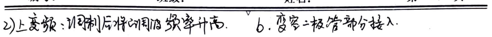
C. Dual Capacitors in Series Connection
$$C_{20} = \frac{C_2C_3}{C_2+C_3} + \frac{0.5C_0C_5}{0.5C_0+C_5}$$
$$f_c = \frac{1}{2\pi\sqrt{LC_{20}}}$$
Advantages: High-frequency oscillation signal, dual capacitors share voltage, low DC and AC signal interference. Capacitors in parallel, impedance and resonance state are the same.
Summary: Direct Frequency Modulation Transmitter
1. Varactor Diode Direct Frequency Modulation Circuit Simple, High Frequency 2. Large Frequency Deviation
1. Insufficient Frequency Stability. Varactor diode in the circuit will conduct under oscillation voltage, causing the Q value of the circuit to decrease. 2. Using a crystal oscillator: small frequency deviation. Using AFC: large frequency deviation. Using PLL: large frequency deviation, stable center frequency.
4. Indirect Frequency Modulation Circuit. First integrate then phase shift. a. Variable Phase Shift Method. (m_p < π/6)
$$V_0(t) = V_{cm} \cos(\omega t + K_p 4\pi t)$$
$$V_0(t) = V_{cm} \cos(\omega t + K_p 4\pi t)$$
B. Frequency Output End Voltage:
$$V_{cm} \left[ Q(\omega_c) \cos(\omega t + \Phi_{2d}(\omega_c)) \right]$$
Where,
$$\Phi_{2d}(\omega_c) = -\arctan Q\left(\frac{f_c}{f_0} - \frac{f_0}{f_c}\right)$$
$$x - Q\left(\frac{f_c - f_0}{f_c + f_0}\right)$$
$$\approx 2Q\left(\frac{f_0 - f_c}{f_c}\right)$$
Due to $$f_0 \approx f_c (1 + \frac{\gamma}{2} m_p \cos(\omega t))$$, the
$$Q(\omega_c) = Q \cdot m_p \cos(\omega t) = m_p \cos(\omega t) \cdot (M_p = Q \cdot \frac{V_{cm}}{V_S + P})$$
Where $$\left| \Phi_{2d}(\omega_c) \right|$$ can be stabilized through a limiter and automatic gain control.
b. Variable Delay Method (m_p large)
$$V_0(t) = V_{cm} \cos(\omega t - k_4(t)) = V_{cm} \cos(\omega t - k_4(t))$$
c. Vector Synthesis Method (m_p < π/2), Armstrong. (Frequency Modulation)
$$V_0(t) = \cos(\omega t + m_p \cos(\omega t))$$
$$\approx \cos(\omega t) - m_p \cos(\omega t) \sin(\omega t)$$
5. Frequency Deviation Problem
$$\Delta \omega_{Direct FM} = \alpha \omega_c V_{cm} \rightarrow \omega_c \uparrow \text{Frequency}$$
$$\Delta \omega_{Indirect FM} = p_i V_{cm} \rightarrow \text{Frequency, Frequency}$$
The frequency deviation can be increased by using frequency modulation and frequency division methods to achieve different frequency growth rates.
### Mathematical and Textual Content
#### Mathematical Formulas: $$ \begin{aligned} &\text{Delay Circuit Implementation:} \\ &\text{Delay Circuit Implementation:} \\ &\text{Delay Circuit Implementation:} \\ &\text{Delay Circuit Implementation:} \\ &\text{Delay Circuit Implementation:} \\ &\text{Delay Circuit Implementation:} \\ &\text{Delay Circuit Implementation:} \\ &\text{Delay Circuit Implementation:} \\ &\text{Delay Circuit Implementation:} \\ &\text{Delay Circuit Implementation:} \\ &\text{Delay Circuit Implementation:} \\ &\text{Delay Circuit Implementation:} \\ &\text{Delay Circuit Implementation:} \\ &\text{Delay Circuit Implementation:} \\ &\text{Delay Circuit Implementation:} \\ &\text{Delay Circuit Implementation:} \\ &\text{Delay Circuit Implementation:} \\ &\text{Delay Circuit Implementation:} \\ &\text{Delay Circuit Implementation:} \\ &\text{Delay Circuit Implementation:} \\ &\text{Delay Circuit Implementation:} \\ &\text{Delay Circuit Implementation:} \\ &\text{Delay Circuit Implementation:} \\ &\text{Delay Circuit Implementation:} \\ &\text{Delay Circuit Implementation:} \\ &\text{Delay Circuit Implementation:} \\ &\text{Delay Circuit Implementation:} \\ &\text{Delay Circuit Implementation:} \\ &\text{Delay Circuit Implementation:} \\ &\text{Delay Circuit Implementation:} \\ &\text{Delay Circuit Implementation:} \\ &\text{Delay Circuit Implementation:} \\ &\text{Delay Circuit Implementation:} \\ &\text{Delay Circuit Implementation:} \\ &\text{Delay Circuit Implementation:} \\ &\text{Delay Circuit Implementation:} \\ &\text{Delay Circuit Implementation:} \\ &\text{Delay Circuit Implementation:} \\ &\text{Delay Circuit Implementation:} \\ &\text{Delay Circuit Implementation:} \\ &\text{Delay Circuit Implementation:} \\ &\text{Delay Circuit Implementation:} \\ &\text{Delay Circuit Implementation:} \\ &\text{Delay Circuit Implementation:} \\ &\text{Delay Circuit Implementation:} \\ &\text{Delay Circuit Implementation:} \\ &\text{Delay Circuit Implementation:} \\ &\text{Delay Circuit Implementation:} \\ &\text{Delay Circuit Implementation:} \\ &\text{Delay Circuit Implementation:} \\ &\text{Delay Circuit Implementation:} \\ &\text{Delay Circuit Implementation:} \\ &\text{Delay Circuit Implementation:} \\ &\text{Delay Circuit Implementation:} \\ &\text{Delay Circuit Implementation:} \\ &\text{Delay Circuit Implementation:} \\ &\text{Delay Circuit Implementation:} \\ &\text{Delay Circuit Implementation:} \\ &\text{Delay Circuit Implementation:} \\ &\text{Delay Circuit Implementation:} \\ &\text{Delay Circuit Implementation:} \\ &\text{Delay Circuit Implementation:} \\ &\text{Delay Circuit Implementation:} \\ &\text{Delay Circuit Implementation:} \\ &\text{Delay Circuit Implementation:} \\ &\text{Delay Circuit Implementation:} \\ &\text{Delay Circuit Implementation:} \\ &\text{Delay Circuit Implementation:} \\ &\text{Delay Circuit Implementation:} \\ &\text{Delay Circuit Implementation:} \\ &\text{Delay Circuit Implementation:} \\ &\text{Delay Circuit Implementation:} \\ &\text{Delay Circuit Implementation:} \\ &\text{Delay Circuit Implementation:} \\ &\text{Delay Circuit Implementation:} \\ &\text{Delay Circuit Implementation:} \\ &\text{Delay Circuit Implementation:} \\ &\text{Delay Circuit Implementation:} \\ &\text{Delay Circuit Implementation:} \\ &\text{Delay Circuit Implementation:} \\ &\text{Delay Circuit Implementation:} \\ &\text{Delay Circuit Implementation:} \\ &\text{Delay Circuit Implementation:} \\ &\text{Delay Circuit Implementation:} \\ &\text{Delay Circuit Implementation:} \\ &\text{Delay Circuit Implementation:} \\ &\text{Delay Circuit Implementation:} \\ &\text{Delay Circuit Implementation:} \\ &\text{Delay Circuit Implementation:} \\ &\text{Delay Circuit Implementation:} \\ &\text{Delay Circuit Implementation:} \\ &\text{Delay Circuit Implementation:} \\ &\text{Delay Circuit Implementation:} \\ &\text{Delay Circuit Implementation:} \\ &\text{Delay Circuit Implementation:} \\ &\text{Delay Circuit Implementation:} \\ &\text{Delay Circuit Implementation:} \\ &\text{Delay Circuit Implementation:} \\ &\text{Delay Circuit Implementation:} \\ &\text{Delay Circuit Implementation:} \\ &\text{Delay Circuit Implementation:} \\ &\text{Delay Circuit Implementation:} \\ &\text{Delay Circuit Implementation:} \\ &\text{Delay Circuit Implementation:} \\ &\text{Delay Circuit Implementation:} \\ &\text{Delay Circuit Implementation:} \\ &\text{Delay Circuit Implementation:} \\ &\text{Delay Circuit Implementation:} \\ &\text{Delay Circuit Implementation:} \\ &\text{Delay Circuit Implementation:} \\ &\text{Delay Circuit Implementation:} \\ &\text{Delay Circuit Implementation:} \\ &\text{Delay Circuit Implementation:} \\ &\text{Delay Circuit Implementation:} \\ &\text{Delay Circuit Implementation:} \\ &\text{Delay Circuit Implementation:} \\ &\text{Delay Circuit Implementation:} \\ &\text{Delay Circuit Implementation:} \\ &\text{Delay Circuit Implementation:} \\ &\text{Delay Circuit Implementation:} \\ &\text{Delay Circuit Implementation:} \\ &\text{Delay Circuit Implementation:} \\ &\text{Delay Circuit Implementation:} \\ &\text{Delay Circuit Implementation:} \\ &\text{Delay Circuit Implementation:} \\ &\text{Delay Circuit Implementation:} \\ &\text{Delay Circuit Implementation:} \\ &\text{Delay Circuit Implementation:} \\ &\text{Delay Circuit Implementation:} \\ &\text{Delay Circuit Implementation:} \\ &\text{Delay Circuit Implementation:} \\ &\text{Delay Circuit Implementation:} \\ &\text{Delay Circuit Implementation:} \\ &\text{Delay Circuit Implementation:} \\ &\text{Delay Circuit Implementation:} \\ &\text{Delay Circuit Implementation:} \\ &\text{Delay Circuit Implementation:} \\ &\text{Delay Circuit Implementation:} \\ &\text{Delay Circuit Implementation:} \\ &\text{Delay Circuit Implementation:} \\ &\text{Delay Circuit Implementation:} \\ &\text{Delay Circuit Implementation:} \\ &\text{Delay Circuit Implementation:} \\ &\text{Delay Circuit Implementation:} \\ &\text{Delay Circuit Implementation:} \\ &\text{Delay Circuit Implementation:} \\ &\text{Delay Circuit Implementation:} \\ &\text{Delay Circuit Implementation:} \\ &
3. Digital Modulation ASK. - Frequency Demodulator -> Sampler -> Detector FSK (fm = fc + af; fs = fc - af; mf = 2fd / fb) -> FM -> HPF -> Detector -> FM -> HPF -> Detector DBPSK. -> 1 bit -> LPF ->. QPSK. -> Switch ->. 7. Loop Filter 1. Overview. Feedback Control System: AGC, AFC, APC -> PLL. Among them, PLL: narrowband (noise, frequency division). Modulation detection, signal detection.
2. PLL Basic Principles. Lock State Locked State: Modulation Detection, Phase Detection (Carrier Detection) ① PD: Phase Detection, Phase Lock Loop ② LF: Low Frequency, Phase Lock Loop ③ VCO: Voltage Controlled Oscillator
3. PLL Linear Analysis. When θe is small, f[θe(t)] ≈ k_d θe(t) + s[θe(t)] + k_w k_d H[θe(t)] = s[θe(t)] + k_w k_d H[θe(t)] = s[θe(t)] ① Static Characteristics. When θe is small, f[θe(t)] ≈ k_d θe(t) + s[θe(t)] + k_w k_d H[θe(t)] = s[θe(t)] + k_w k_d H[θe(t)] = s[θe(t)] ② Dynamic Characteristics. When θe is small, f[θe(t)] ≈ k_d θe(t) + s[θe(t)] + k_w k_d H[θe(t)] = s[θe(t)] + k_w k_d H[θe(t)] = s[θe(t)] ③ When θe is large, f[θe(t)] ≈ k_d θe(t) + s[θe(t)] + k_w k_d H[θe(t)] = s[θe(t)] + k_w k_d H[θe(t)] = s[θe(t)] ④ When θe is large, f[θe(t)] ≈ k_d θe(t) + s[θe(t)] + k_w k_d H[θe(t)] = s[θe(t)] + k_w k_d H[θe(t)] = s[θe(t)] ⑤ When θe is large, f[θe(t)] ≈ k_d θe(t) + s[θe(t)] + k_w k_d H[θe(t)] = s[θe(t)] + k_w k_d H[θe(t)] = s[θe(t)] ⑥ When θe is large, f[θe(t)] ≈ k_d θe(t) + s[θe(t)] + k_w k_d H[θe(t)] = s[θe(t)] + k_w k_d H[θe(t)] = s[θe(t)] ⑦ When θe is large, f[θe(t)] ≈ k_d θe(t) + s[θe(t)] + k_w k_d H[θe(t)] = s[θe(t)] + k_w k_d H[θe(t)] = s[θe(t)] ⑧ When θe is large, f[θe(t)] ≈ k_d θe(t) + s[θe(t)] + k_w k_d H[θe(t)] = s[θe(t)] + k_w k_d H[θe(t)] = s[θe(t)] ⑨ When θe is large, f[θe(t)] ≈ k_d θe(t) + s[θe(t)] + k_w k_d H[θe(t)] = s[θe(t)] + k_w k_d H[θe(t)] = s[θe(t)] ⑩ When θe is large, f[θe(t)] ≈ k_d θe(t) + s[θe(t)] + k_w k_d H[θe(t)] = s[θe(t)] + k_w k_d H[θe(t)] = s[θe(t)] ⑪ When θe is large, f[θe(t)] ≈ k_d θe(t) + s[θe(t)] + k_w k_d H[θe(t)] = s[θe(t)] + k_w k_d H[θe(t)] = s[θe(t)] ⑫ When θe is large, f[θe(t)] ≈ k_d θe(t) + s[θe(t)] + k_w k_d H[θe(t)] = s[θe(t)] + k_w k_d H[θe(t)] = s[θe(t)] ⑬ When θe is large, f[θe(t)] ≈ k_d θe(t) + s[θe(t)] + k_w k_d H[θe(t)] = s[θe(t)] + k_w k_d H[θe(t)] = s[θe(t)] ⑭ When θe is large, f[θe(t)] ≈ k_d θe(t) + s[θe(t)] + k_w k_d H[θe(t)] = s[θe(t)] + k_w k_d H[θe(t)] = s[θe(t)] ⑮ When θe is large, f[θe(t)] ≈ k_d θe(t) + s[θe(t)] + k_w k_d H[θe(t)] = s[θe(t)] + k_w k_d H[θe(t)] = s[θe(t)] ⑯ When θe is large, f[θe(t)] ≈ k_d θe(t) + s[θe(t)] + k_w k_d H[θe(t)] = s[θe(t)] + k_w k_d H[θe(t)] = s[θe(t)] ⑰ When θe is large, f[θe(t)] ≈ k_d θe(t) + s[θe(t)] + k_w k_d H[θe(t)] = s[θe(t)] + k_w k_d H[θe(t)] = s[θe(t)] ⑱ When θe is large, f[θe(t)] ≈ k_d θe(t) + s[θe(t)] + k_w k_d H[θe(t)] = s[θe(t)]
**Mathematical Formulas:**
1) RC Integrator LF: $$H_{IF}(s) = \frac{1}{1+s\tau}$$ $$\tau = RC$$ $$H(s) = \frac{\omega_n^2}{s^2 + 2\zeta\omega_n s + \omega_n^2}$$ $$\omega_n^2 = \frac{K_p}{\tau}$$ $$H_{IF}(s) = \frac{s^2 + 2\zeta\omega_n s}{s^2 + 2\zeta\omega_n s + \omega_n^2}$$ $$2\zeta\omega_n = \frac{1}{\tau}$$
2) Ideal Integrator LF: $$H_{IF}(s) = \frac{1+sT_2}{1+s(T_1+T_2)}$$ $$\tau = R_1C, T_2 = R_2C$$ $$H(s) = \frac{(2\zeta-\omega_n/K_p)\omega_n s + \omega_n^2}{s^2 + 2\zeta\omega_n s + \omega_n^2}$$ $$\omega_n^2 = \frac{K_p}{\tau_1 + \tau_2}$$ $$H_{IF}(s) = \frac{s^2 + s\omega_n^2/K_p}{s^2 + 2\zeta\omega_n s + \omega_n^2}$$ $$2\zeta\omega_n = \frac{1+K_pT_2}{\tau_1 + \tau_2}$$
3) Ideal Integrator LF: $$H_{IF}(s) = \frac{1+sT_2}{sT_1}$$ $$\tau_1 = R_1C, \tau_2 = R_2C$$ $$H(s) = \frac{2\zeta\omega_n s + \omega_n^2}{s^2 + 2\zeta\omega_n s + \omega_n^2}$$ $$\omega_n^2 = \frac{K_p}{\tau_1}$$ $$H_{IF}(s) = \frac{s^2}{s^2 + 2\zeta\omega_n s + \omega_n^2}$$ $$2\zeta\omega_n = \frac{K_p\tau_2}{\tau_1}$$
4) Ideal Integrator LF: $$H_{IF}(s) = 1$$ $$H(s) = \frac{K_p}{s + K_p}$$ $$H_{IF}(s) = \frac{s}{s + K_p}$$
5) PLL Frequency Characteristics: $$\text{Input is phase locked, output is phase locked.}$$ $$V_i = V_{im} \sin[\omega_0 t + \phi_{im} \sin(\Omega t + \psi_1)]$$ $$V_o = V_{om} \cos[\omega_0 t + \phi_{om} \sin(\Omega t + \psi_2)]$$ $$\phi_i = \phi_{im} \sin(\Omega t + \psi_1)$$ $$\phi_o = \phi_{om} \sin(\Omega t + \psi_2)$$ $$\frac{\phi_o(s)}{\phi_i(s)} = H(s)$$ $$\phi_{oo} = f^{-1} \left[\frac{\omega_{10} - \omega_{20}}{K_{o} - A_{V}}\right]$$ 1) First-order: $$H(j\omega) = \frac{1}{1 + (\Omega/K_p)^2} e^{-j\omega\arctan(\Omega/K_p)}$$ 2) Second-order: $$H(j\omega) = \frac{1}{(1 - 2\zeta\omega)^2 + (\zeta\omega)^2} e^{j\omega\arctan(\zeta\omega)}$$
**Chinese Text:**
(Subject: ) Math Homework Paper (Subject: ) Stability (Subject: ) Transfer Function (Subject: ) Closed-loop Transfer Function (Subject: ) Open-loop Transfer Function
2) Closed-loop model and transfer function. 2) Frequency response: $$\Phi_{1}(s) = \frac{\Delta\omega}{s}$$ 1st order: $$\Phi_{1}(s) = \frac{\Delta\omega}{s(s + K_p)}, \Phi_{\infty} = \frac{\Delta\omega}{K_p}$$ 2nd order: eg ideal integrator LF. $$\Phi_{1}(s) = \frac{\Delta\omega}{s^2 + 2\zeta\omega_n s + \omega_n^2}, \Phi_{\infty} = 0$$ $$\omega_n$$越大，跟踪越快，$$\zeta$$越大，跟踪越快. $$\omega_n$$越大，跟踪越快，$$\zeta$$越大，跟踪越快. $$\omega_n$$越大，跟踪越快，$$\zeta$$越大，跟踪越快. $$\omega_n$$越大，跟踪越快，$$\zeta$$越大，跟踪越快. $$\omega_n$$越大，跟踪越快，$$\zeta$$越大，跟踪越快. $$\omega_n$$越大，跟踪越快，$$\zeta$$越大，跟踪越快. $$\omega_n$$越大，跟踪越快，$$\zeta$$越大，跟踪越快. $$\omega_n$$越大，跟踪越快，$$\zeta$$越大，跟踪越快. $$\omega_n$$越大，跟踪越快，$$\zeta$$越大，跟踪越快. $$\omega_n$$越大，跟踪越快，$$\zeta$$越大，跟踪越快. $$\omega_n$$越大，跟踪越快，$$\zeta$$越大，跟踪越快. $$\omega_n$$越大，跟踪越快，$$\zeta$$越大，跟踪越快. $$\omega_n$$越大，跟踪越快，$$\zeta$$越大，跟踪越快. $$\omega_n$$越大，跟踪越快，$$\zeta$$越大，跟踪越快. $$\omega_n$$越大，跟踪越快，$$\zeta$$越大，跟踪越快. $$\omega_n$$越大，跟踪越快，$$\zeta$$越大，跟踪越快. $$\omega_n$$越大，跟踪越快，$$\zeta$$越大，跟踪越快. $$\omega_n$$越大，跟踪越快，$$\zeta$$越大，跟踪越快. $$\omega_n$$越大，跟踪越快，$$\zeta$$越大，跟踪越快. $$

**5. PLL's Stability.**
- **1st Loop Stable.** 90° - **2nd Loop Due to Parasitic Capacitance May Not Be Stable.** 180°
**6. PLL's Noise Characteristics.**
- **Input Noise (Closed Loop Transfer Function H(s))** - **VCO Noise (Open Loop Transfer Function H(s))**
**4. PLL's Nonlinearity Analysis.**
- **Tracking: Lock → Re-lock = Linearity (ωio = ωo) → Same Band** - **Capture: Lost → Lock = Nonlinearity. (ωio ≠ ωo) → Different Band** - **Fast Capture Band ≤ Capture Band ≤ Same Band.** - **Capture Band: Maximum Initial Frequency Difference.** - **Fast Capture Band: Within 2π of Capture Band.**
**1. 1st Loop Nonlinearity Analysis (eg. Phase Lock Loop).**
$$\varphi_{e}(t) + K_p \sin(\varphi_{e}(t)) = \Delta \omega_i = \omega_{io} - \omega_{o}$$
$$\varphi_{e}(t) - \varphi_{e}(t) \text{ (Graph)}:$$
$$\varphi_{e} = \arcsin \frac{\Delta \omega_i}{K_p} + 2n\pi. (\varphi_e = 0)$$
**Capture Band: Δωi < Kp; Always Has a Stable Equilibrium Point.** **Fast Capture Band: Δωi > Kp; Frequency Pulling, Not Stable.**
**2. Second Loop Nonlinearity Analysis (eg. Phase Lock Loop).**
- **Frequency Pulling → Phase Pulling.** - **Ideal Integrator LF: Capture Band 0°, Fast Capture Band 25°.** - **Capture Time Tp ≈ \frac{\Delta \omega_i^2}{25 \omega_i^2} → Accelerate Fast Capture Measures.** - **1) Expand Loop Bandwidth.** - **2) Reduce Δωi: External Tuning Voltage. Adjust VCO Frequency.** - **3) Use a Narrow Bandwidth Detector Instead of Phase Detector; Capture ≈ Fast Capture.**
**5. Integrated Phase Lock Loop.**
**6. Phase Lock Loop Applications.**
- **Narrow Band Tracking Filter - Narrow Band Tracking Loop (Carrier Tracking).** - **Solve the Problem of Frequency Deviation in General Receivers Affecting the Signal-to-Noise Ratio.**
**Block Diagram:**
$$\text{LF} \rightarrow \text{Phase Detector} \rightarrow \text{Integrator} \rightarrow \text{Limit Amplifier} \rightarrow \text{Phase Detector}$$
$$f_{io} \rightarrow \text{Phase Detector} \rightarrow \text{Integrator} \rightarrow \text{Limit Amplifier} \rightarrow \text{Phase Detector}$$
$$f_{io} \rightarrow \text{Phase Detector} \rightarrow \text{Integrator} \rightarrow \text{Limit Amplifier} \rightarrow \text{Phase Detector}$$
$$f_{io} \rightarrow \text{Phase Detector} \rightarrow \text{Integrator} \rightarrow \text{Limit Amplifier} \rightarrow \text{Phase Detector}$$
$$f_{io} \rightarrow \text{Phase Detector} \rightarrow \text{Integrator} \rightarrow \text{Limit Amplifier} \rightarrow \text{Phase Detector}$$
$$f_{io} \rightarrow \text{Phase Detector} \rightarrow \text{Integrator} \rightarrow \text{Limit Amplifier} \rightarrow \text{Phase Detector}$$
$$f_{io} \rightarrow \text{Phase Detector} \rightarrow \text{Integrator} \rightarrow \text{Limit Amplifier} \rightarrow \text{Phase Detector}$$
$$f_{io} \rightarrow \text{Phase Detector} \rightarrow \text{Integrator} \rightarrow \text{Limit Amplifier} \rightarrow \text{Phase Detector}$$
$$f_{io} \rightarrow \text{Phase Detector} \rightarrow \text{Integrator} \rightarrow \text{Limit Amplifier} \rightarrow \text{Phase Detector}$$
$$f_{io} \rightarrow \text{Phase Detector} \rightarrow \text{Integrator} \rightarrow \text{Limit Amplifier} \rightarrow \text{Phase Detector}$$
$$f_{io} \rightarrow \text{Phase Detector} \rightarrow \text{Integrator} \rightarrow \text{Limit Amplifier} \rightarrow \text{Phase Detector}$$
$$f_{io} \rightarrow \text{Phase Detector} \rightarrow \text{Integrator} \rightarrow \text{Limit Amplifier} \rightarrow \text{Phase Detector}$$
$$f_{io} \rightarrow \text{Phase Detector} \rightarrow \text{Integrator} \rightarrow \text{Limit Amplifier} \rightarrow \text{Phase Detector}$$
$$f_{io} \rightarrow \text{Phase Detector} \rightarrow \text{Integrator} \rightarrow \text{Limit Amplifier} \rightarrow \text{Phase Detector}$$
$$f_{io} \rightarrow \text{Phase Detector} \rightarrow \text{Integrator} \rightarrow \text{Limit Amplifier} \rightarrow \text{Phase Detector}$$
$$f_{io} \rightarrow \text{Phase Detector} \rightarrow \text{Integrator} \rightarrow \text{Limit Amplifier} \rightarrow \text{Phase Detector}$$
$$f_{io} \rightarrow \text{Phase Detector} \rightarrow \text{Integrator} \rightarrow \text{Limit Amplifier} \rightarrow \text{Phase Detector}$$
$$f_{io} \rightarrow \text{Phase Detector} \rightarrow \text{Integrator} \rightarrow \text{Limit Amplifier} \rightarrow \text{Phase Detector}$$
$$f_{io} \rightarrow \text{Phase Detector} \rightarrow \text{Integrator} \rightarrow \text{Limit Amplifier} \rightarrow \text{Phase Detector}$$
$$f_{io} \rightarrow \text{Phase Detector} \rightarrow \text{Integrator} \rightarrow \text{Limit Amplifier} \rightarrow \text{Phase Detector}$$
$$f_{io} \rightarrow \text{Phase Detector} \rightarrow \text{Integrator} \rightarrow \text{Limit Amplifier} \rightarrow \text{Phase Detector}$$
$$f_{io} \rightarrow \text{Phase Detector} \rightarrow \text{Integrator} \rightarrow \text{Limit Amplifier} \rightarrow \text{Phase Detector}$$
$$f_{io} \rightarrow \text{Phase Detector} \rightarrow \text{Integrator} \rightarrow \text{Limit Amplifier} \rightarrow \text{Phase Detector}$$
$$f_{io} \rightarrow \text{Phase Detector} \rightarrow \text{Integrator} \rightarrow \text{Limit Amplifier} \rightarrow
2. Carrier recovery - wideband loop (carrier tracking). 1. Direct frequency synthesis: mix + phase/frequency + filter. 1) Phase loop: phase lock loop with PSK. 2) Costas loop: various digital control signals. 3) Phase-locked loop - wideband loop (carrier tracking) Vfm -> PD -> LF -> filter -> Vco. 4) Frequency synthesis and other applications 7. AFC. T(s) = $$\frac{KdKoHfs(s)}{1+KdKoHfs(s)}$$ Te(s) = $$\frac{1}{1+KdKoHfs(s)}$$ Vco: $$\frac{Nk}{1+NkKo}$$ FD: $$\frac{Nk}{1+NkKo}$$ AFC control FM transmitter Crystal: $$\frac{Nk}{1+NkKo}$$ 8. Frequency synthesis technology. 2. Main technical indicators 1) Frequency range, frequency resolution ~ reference frequency (oscillator), conversion time ~ reference frequency (PLL), frequency stability, frequency purity. 3. Phase-locked loop frequency synthesis method. 1) Phase-locked loop with phase detector frequency synthesis. f2 + Nfr resolution: f1; output frequency higher; frequency purity not high (noise) 2) Phase-locked loop with phase detector frequency synthesizer. PNfr resolution: f1; output frequency higher; frequency purity higher (noise) 3) Dual phase detector phase-locked loop frequency synthesizer. (B+DA+PN-A) resolution: f1; output frequency higher; frequency purity higher (noise) 4) Multi-loop frequency synthesizer. (N1 + N2) / N1 resolution: f1; first loop determines integer, other loops determine fractional part.